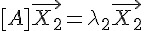
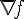
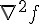
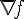
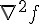
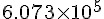

- 前言
- 程式人短訊
- 人物速寫
- 影音頻道
- 程式人討論區
- 程式與科學
- 程式人文集
- Arduino入門教學(10) – 使用 SHT15 溫溼度計 (作者：Cooper Maa)
- JavaScript (10) – Google 的語音辨識 API 之使用 (作者：陳鍾誠)
- R 統計軟體(7) – 主成分分析與因子分析 (作者：陳鍾誠)
- Verilog (4) – 算術邏輯單元 ALU 的設計 (作者：陳鍾誠)
- 開放電腦計畫 (4) – CPU0mc 處理器：使用 Verilog 實作 (作者：陳鍾誠)
- R 講題分享 – 在雲端運算環境使用 R 和 MPI (作者：Taiwan R User Group)
- Arduino 專題分享 – 利用藍牙模組達到兩台 arduino 互相通訊 (作者：許肇驛)
- 雜誌訊息
前言
編輯小語
在本期的「程式人雜誌」中，聚焦的一個主題是「電磁學」，這是一個對於程式人而言，通常有概念卻又無法深入理解的領域， 我們試圖在本期當中讓讀者能更進一步理解「電磁學」的「人物、歷史、理論、以及應用」等等面向。
在前幾期當中，我們通常用「程式人介紹、程式人頻道、....」等等以程式人開頭的標題。但是最近編輯常常將觸角 延伸到程式相關領域的主題上，因此我們將標題改為「人物速寫、影音頻道」等等，希望能更忠實的反應所呈現的內容。
當然、在程式人文集當中，我們同樣有關於「Arduino、JavaScript、R、Verilog 與開放電腦計畫」的文章，讓大家可以吸收到 專業的程式資訊，希望您會喜歡這些文章。
---- （程式人雜誌編輯 - 陳鍾誠）
授權聲明
本雜誌採用 創作共用：姓名標示、相同方式分享 授權，若您想要修改本書產生衍生著作時，至少應該遵守下列授權條件：
- 標示原作者姓名
- 採用 創作共用：姓名標示、相同方式分享 的方式公開衍生著作。
另外、當本雜誌中有文章或素材並非採用 姓名標示、相同方式分享 時，將會在該文章或素材後面標示其授權，此時該文章將以該標示的方式授權釋出，請修改者注意這些授權標示，以避免產生侵權糾紛。
例如有些文章可能不希望被作為「商業性使用」，此時就可能會採用創作共用：姓名標示、非商業性、相同方式分享 的授權，此時您就不應當將該文章用於商業用途上。
最後、懇請勿移除公益捐贈的相關描述，以便讓愛心得以持續散播！
程式人短訊
電池的歷史與原理
電池，一般狹義上的定義是將本身儲存的化學能轉成電能的裝置，廣義的定義為將預先儲存起的能量轉化為可供外用電能的裝置。因此，像太陽能電池只有轉化而無儲存功能的裝置不算是電池。其他名稱有電瓶、電芯，而中文池及瓶也有儲存作用之意。
萊頓瓶
萊頓瓶（英語：Leyden jar）是一種用以儲存靜電的裝置，最先由 Pieter van Musschenbroek（1692年－1761年）在荷蘭的萊頓試用。 作為原始形式的電容器，萊頓瓶曾被用來作為電學實驗的供電來源，也是電學研究的重大基礎。萊頓瓶的發明，標誌著對電的本質和特性進行研究的開始。
典型的萊頓瓶是一個玻璃容器，內外包覆著導電金屬箔作為極板。瓶口上端接一個球形電極，下端利用導體（通常是金屬鎖鏈）與內側金屬箔連接。萊頓瓶的充電方式是將電極接上靜電產生器等來源，外部金屬箔接地；內部與外部的金屬將會攜帶相等但極性相反的電荷。
嚴格來說，萊頓瓶並不屬於電池，而是一種電容，但早期還沒有電池的時候，常被事先充好電之後，拿來當一次性的放電體使用，所以可以說是最早的「電池」。
圖、萊頓瓶的實體與結構
以下有個關於萊頓瓶如何被用在早期電學實驗上的故事，相信大家會有興趣，故事如下：
Jean-Antoine Nollet 是一個對電學特別有興趣的法國神父，1746 年時、他想要測試電流到底跑得多快，所以請兩百位修道士每個人手池金屬條 連接成總長一英哩 (1.6 公里) 的環狀迴路，然後他手持一只特大的萊頓瓶，連接上兩端的電極，結果這些修道士幾乎同時因被電極而癱軟在地。
後來他還想再做這類的實驗，但是修道士們都避之唯恐不及，拒絕再當一次實驗品，後來他只好去找法皇路易十五，讓皇帝命令一百八十名御林軍在凡爾賽宮當實驗品。
在萊頓瓶剛發明不久的那個年代，很多王公貴族對這些新奇的小玩意都很有興趣，甚這後來在酒吧裏，還流行用小的萊頓瓶去「電吻」， 也就是「觸碰一下萊頓瓶、感受被電到的感覺」。
伏打電堆與伽伐尼電池
在1780年，路易吉·伽伐尼 (義大利文：Luigi Galvani) 發現，兩種不同的金屬（例如，銅和鋅）連接後，如果同一時間觸摸青蛙腿的兩處神經，青蛙腿會發生收縮。 他稱這是「動物電」（animal electricity）。
伏打電堆（Voltaic pile），又名伏打堆，是最早出現的化學電池，是在1800年由義大利物理學家亞歷山卓·伏打伯爵發明。
伏打電堆由很多個單元堆積而成，每一單元有鋅板與銅板各一，其中夾著浸有鹽水的布或紙板以作為電解質。如下所示：
圖、伏打電堆的結構與實體
後來、這類由兩種不同的金屬與一種電解質組成的電池，通常被稱為「伽伐尼電池」，其結構通常改由兩個半電池間以鹽橋或多孔物相連而成。 其電路與反應式如下：
圖、鋅-銅 伽凡尼電池的電路圖與反應式
碳鋅電池
碳鋅電池 (zinc–carbon battery) 的容器是一個鋅罐。裡面有一層由 NH4Cl 和 ZnCl2 所構成的糊狀液體， 這個糊狀液體通過一個紙層與粉末狀的碳和二氧化錳隔開。這些粉末填充在一個碳棒的周圍。
此電池正極的碳棒與二氧化錳中所混合的碳只負責引出電流，並不參與反應，正極實際參與還原反應並提供 正電的是二氧化錳，因此，又稱為錳鋅電池、鋅錳電池或鋅－二氧化錳電池，也有簡稱錳乾電池的。
碳鋅電池的電動勢大約是1.5V。電動勢的不確定是由於陰極反應十分複雜，相比來說，陽極反應（鋅端）則有一個已知的電勢。 副反應及活性反應物的消耗直接導致電池的內阻增加，電池電動勢降低。
圖、碳鋅電池的反應式、實體與結構
鉛酸蓄電池
蓄電池的原理是通過將化學能和直流電能相互轉化，在放電後經充電後能復原，從而達到重複使用效果。
鉛酸蓄電池 (Lead–acid battery) 的氧化還原總反應電壓為 2 V (伏特) ，所以一顆由 K 的電磁單元所組成的 鉛蓄電池之電壓通常為 2K 伏特。
圖、鉛酸蓄電池的反應式、實體與用途
電池 DIY : 檸檬電池
看了以上這麼多電池，雖然感覺原理並不難，但是要自己動手做一顆，卻還是不知如何下手。
不過還好、我們可以用檸檬！
YouTube 上已經有人做了詳細的示範，告訴我們「如何用檸檬做出電池」，請參考以下影片：
- Create a Lemon Battery -- http://youtu.be/AY9qcDCFeVI
所以、我們應該也可以用「50 元或 1 元的銅板」，加上鐵釘去做出檸檬電池，其中銅板是正極，而鐵釘因為表面通常會 鍍鋅以防止生鏽，再加上檸檬所含的電解質可以扮演鹽橋的功能，所以就可以組合成標準的「銅-鋅、伽凡尼」電池。
圖、檸檬電池的做法
「銅-鋅反應」釋放的電壓大約是 1.1 伏特，而點亮一顆 LED 需要 3 伏特以上的電壓，所以必須要用三顆以上的檸檬電池 串連，就可以點亮 LED 燈了。
結語
電池通常是由「化學反應」所供電的，而這些化學反應釋放的電壓經常是固定的，假如該電池的化學反應釋放的電壓是 n 伏特，那麼這類電池所釋放的電壓通常是 n*k 伏特，因為一顆電池通常是由 k 個電池單元 (Battery Cell) 所組成的。
參考文獻
- 維基百科：電池
- 維基百科：伽凡尼電池
- 維基百科：伏打電堆
- 維基百科：鉛酸蓄電池
- 維基百科：碳鋅電池
- http://en.wikipedia.org/wiki/Battery_(electricity)
- 檸檬電池如何讓燈泡發亮？
【本文由陳鍾誠取材並修改自 維基百科 與 OpenStax College 的 College Physics 一書，採用創作共用的 姓名標示、相同方式分享 授權】
人物速寫
電磁學先鋒：安德烈-馬里·安培 (André-Marie Ampère)
圖、安德烈-馬里·安培
安德烈-馬里·安培（André-Marie Ampère，FRS，1775年－1836年），法國化學家，在電磁作用方面的研究成就卓著， 對物理學及數學也有重要貢獻。電流的國際單位安培即以其姓氏命名。
1820年 7月，H.C.奧斯特發表關於電流磁效應的論文後，安培馬上集中精力研究，幾周內就提出了安培定則即右手螺旋定則。 隨後很快在幾個月之內連續發表了 3 篇論文，並設計了 9 個著名的實驗，總結了載流迴路中電流元在電磁場中的運動規律， 即安培定律。
1820年 9月25日，安培報告了兩根載流導線存在相互影響，相同方向的平行電流彼此相吸，相反方向的平行電流彼此相斥； 對兩個線圈之間的吸引和排斥也作了討論。通過一系列經典的和簡單的實驗，他認識到磁是由運動的電產生的。
1821～1825年，安培做了關於電流相互作用的四個精巧的實驗，並根據這四個實驗導出兩個電流源之間的相互作用力公式。
1827年，安培將他的電磁現象的研究綜合在《電動力學現象的數學理論》一書中 ，這是電磁學史上一部重要的經典論著， 對以後電磁學的發展起了深遠的影響。
安培的科學貢獻
1、直線電流的安培定則用右手握住導線，讓伸直的大拇指所指的方向跟電流的方向一致，那麼彎曲的四指所指的方向就是磁感線的環繞方向。
圖、安培右手定則
然後、安培用數學描述這個現象，於是提出了著名的「安培定律」。
| 積分形式 | 微分形式 | 「馬克士威-安培方程式」的微分形式 | |
|---|---|---|---|
| 安培定律 |  |
「安培定律的積分形式」所述說的是：「電流直線流動 I 會造成環形磁場  」，而後人所改寫的「微分形式」所述說的是： 「磁通量 B 的旋度 來自於（產生該磁場的）傳導電流密度 J」。
」，而後人所改寫的「微分形式」所述說的是： 「磁通量 B 的旋度 來自於（產生該磁場的）傳導電流密度 J」。
這個定律後來經過馬克斯威的修正之後，成了「馬克斯威電磁波方程式」裏重要的一個公式，如上表最右邊的公式所示， 該公式主要加入了「電流的變化 (或說電通量變化) 也會造成磁場的改變」這個修正。
2、環形電流的安培定則讓右手彎曲的四指和環形電流的方向一致，那麼伸直的大拇指所指的方向就是環形電流中心軸線上磁感線的方向。
圖、環形電流的安培定則
- 安培還發現，電流在線圈中流動的時候表現出來的磁性和磁鐵相似，創製出第一個螺線管，在這個基礎上發明了探測和量度電流的電流計。
圖、安培電流計
- 提出分子電流假說，認為構成磁體的分子內部存在一種環形電流，這在當時物質結構的知識甚少的情況下無法證實。但後來的科學家了解到物質由 分子組成，而分子由原子組成，原子中有繞核運動的電子，安培的分子電流假說有了實在的內容，已成為認識物質磁性的重要依據。
補充 1：1911年，拉塞福提出電子環繞原子旋轉的模型，此時距離安培電子流假說已將近百年，
圖、安德烈-馬里·安培
補充 2： 1913年，波耳提出了拉塞福模型的改良版，加入了軌域的觀念。距離原子核越遠，軌域的能量就越高。當電子從距離原子核更遠的軌域，躍遷到距離原子核更近的軌域時，會以光子的形式釋放出能量。相反的，從低能級軌域躍遷到高能級軌域則會吸收能量。
圖、波耳的能階軌域模型
藉著這些量子化軌域，波耳正確地計算出氫原子光譜。但是，使用波耳模型，並不能夠解釋譜線的相對強度，也無法計算出更複雜原子的光譜。 這些難題，尚待後來量子力學的解釋。
安培的小故事
安培思考科學問題專心致志，據說有一次，安培正慢慢地向他任教的學校走去，邊走邊思索著一個電學問題。 經過塞納河的時候，他隨手揀起一塊鵝卵石裝進口袋。過一會兒，又從口袋裡掏出來扔到河裡。到學校後， 他走進教室，習慣地掏懷錶看時間，拿出來的卻是一塊鵝卵石。原來，懷錶已被扔進了塞納河。
還有一次，安培在街上散步，走著走著，想出了一個電學問題的算式，正為沒有地方運算而發愁。突然， 他見到面前有一塊「黑板」，就拿出隨身攜帶的粉筆，在上面運算起來。那「黑板」原來是一輛馬車的車廂背面。 馬車走動了，他也跟著走，邊走邊寫；馬車越來越快，他就跑了起來，一心一意要完成他的推導， 直到他實在追不上馬車了才停下腳步。安培這個失常的行動，使街上的人笑得前仰後合。
結語
從以上的小故事我們可以看到，安培能夠在電磁學上有卓越的貢獻，並非僥倖而已，當一個人全心投入某個領域時， 才有可能在該領域散發出無比耀眼的光芒啊！
參考文獻
- 維基百科：安德烈-瑪麗·安培
- 維基百科：安培定律
- 維基百科：安培计
- 維基百科：電感
- 維基百科：電子
- 維基百科：拉塞福模型
- 電的旅程：探索人類駕馭電子的歷史過程, 作者：張大凱, 遠見天下出版社
- 電磁波 ：一本電機系學生的入門書, 高銘盛, 滄海出版社
【本文由陳鍾誠取材並修改自 維基百科 與 OpenStax College 的 College Physics 一書，採用創作共用的 姓名標示、相同方式分享 授權】
電磁學奇才：麥可·法拉第 (Michael Faraday)
圖、麥可·法拉第的肖象素描
由約翰·瓦特金所畫，現存於大英圖書館
麥可·法拉第（英語：Michael Faraday，1791年9月22日－1867年8月25日），英國物理學家在電磁學及電化學領域 做出很多重要貢獻。
西方科學與工業之間，總是存在某種相互促進的關係，在科學的發展過程當中，總是呈現「理論 - 實驗 - 理論 - 實驗 ....」 這樣的發展循環，而法拉第所代表的，極度的偏向「實驗」這一端，他一生當中做過了無數的實驗，這些實驗遍佈了 整個電磁學領域，讓後來的「馬克斯威」可以透過解讀他的實驗結果，運用深厚的數學內功提出了電磁學的完整理論架構， 並創造出了「馬克斯威方程式」，如果沒有法拉第，或許就沒有「馬克斯威」的電磁學理論了。
出身
法拉第出生於英國紐因頓，接近現在的倫敦大象堡。法拉第家的經濟狀況並不好，他的父親詹姆士是個鐵匠以及 基督教桑地馬尼安教派的一員，於1780年代從英格蘭的西北部來到倫敦。由於家境貧窮，因此他只好靠自學 求取知識。14歲時，他成為書本裝訂商及銷售人喬治·雷伯的門生。7年學徒生涯中，他讀過大量書籍，包括以 撒·華茲的「悟性的提升」，書中對於學習的原則與建議，法拉第一直遵行不輟。另外，他也從由珍·瑪西女士 所寫的「化學閒聊」中得到很多啟發。在這些大量的閱讀之中，法拉第漸漸樹立起對科學的興趣，這其中， 又以電學為甚。
1812年，時齡二十歲，隨著門生生涯走入尾聲，法拉第開始旁聽由赫赫有名的皇家研究機構的一員以及 英國皇家學會會長：漢弗里·戴維爵士以及市立哲學協會的創始者：約翰·塔特姆所開的演講。 參加這些演講的門票大多是由威廉·譚斯（皇家愛樂協會的創辦人之一）給予法拉第。之後有一次，法拉第將 自己在演講中細心抄錄，並旁徵博引，內容達三百頁的筆記拿給戴維過目，戴維立刻給予他相當友善且正面的答覆。 也因此，戴維在一次三氯化氮實驗中發生意外，視力受損之後，便僱用了法拉第作為他的秘書。當皇家研究院中一位 助手約翰·培恩離開後，他們便請求戴維尋找替代人選。戴維在1813年3月1日推薦法拉第成為化學助理。 由於法拉第在印書店的新僱主亨利·德拉羅許脾氣暴躁，他毫不猶豫的離開了這份舊工作。
行事作風在當時的階級分明的英國社會中，出身卑微的法拉第並不被認同為一個紳士。在1813年五月，
戴維展開一次長期的歐洲巡迴。由於他的侍從並不想跟隨，法拉第原本是以助手的身份跟去， 卻被要求同時作戴維的僕人，直到在巴黎找到人代替為止。戴維最後沒有找到代替者， 法拉第也因此被強迫在整個旅行中同時兼任僕人與助手。戴維的妻子珍·亞普莉絲不願意平等 對待法拉第，旅行時要他坐在馬車外，與傭人一起吃飯，法拉第的處境越來越悽慘，甚至開始 考慮獨自回到英國放棄科學研究。不過這次旅行，也讓他接觸了歐洲許多的科學菁英， 刺激出他許多想法。逆境最終沒有阻擋住法拉第在科學上的貢獻。在旅行過後不久， 法拉第的成就便超越了戴維。
法拉第的主要贊助者兼顧問為約翰·『瘋狂傑克』·富勒，他在皇家研究院裡創立了富勒里安化學教授這個職位。
在1824年，法拉第被選為皇家學會院士，並於1825年被指派為實驗室主任。1833年他被選為皇家研究院終身職，任職而不需講課。
法拉第是一名高度虔誠的教徒，他是桑地馬尼安教派（蘇格蘭國教會的一分支）的信徒，曾在其中任兩任長老。 此教派是由蘇格蘭長老會牧師格拉斯於1730年創立，此教要求完全的信奉和承諾。傳記學家曾經認為"一種神與 自然融為一體的感覺貫穿了法拉第的生活與工作。法拉第在1821年娶沙拉·巴娜德為妻，不過膝下無子。 他們由於參加桑地馬尼安教會而認識。
雖然法拉第只受過很少的正式教育，這使得他的高等數學知識（例如微積分）相對有限，但不可否認， 法拉第仍是歷史上最有影響力的科學家之一。某些科學史學家認為他是科學史上最優秀的 「實驗主義者」。其科學知識可能主要是在擔任另一科學家戴維的助手時所學習而來，因而雖然 法拉第不曾受過高等教育，但仍可把漢弗里·戴維視為法拉第的指導教授。
由於道德原因，法拉第拒絕參與為「克里米亞戰爭」製造化學武器。在倫敦薩弗伊廣場，電工程師協會外，聳立著一個法拉第的雕像， 而在布魯內爾大學新建的一個接待廳以法拉第為名。
電磁學研究
1821 年，在丹麥化學家「漢斯·奧斯特」發現電磁現象後，「戴維」和「威廉·海德·渥拉斯」頓嘗試設計一部電動機，但沒有成功。 法拉第在與他們討論過這個問題後，繼續工作並建造了兩個裝置以產生他稱為「電磁轉動」的現象：由線圈外環狀磁場造成的連續旋轉運動。 他把導線接上化學電池，使其導電，再將導線放入內有磁鐵的汞池之中，則導線將繞著磁鐵旋轉。這個裝置現稱為單極電動機。 這些實驗與發明成為了現代電磁科技的基石。
但此時法拉第卻做了一件不智之舉，在沒有通知戴維跟渥拉斯頓情況下，擅自發表了此項研究成果。此舉招來諸多爭議， 也迫使他離開電磁學研究數年之久。
在這個階段，有些證據指出戴維可能有意阻礙法拉第在科學界的發展。如在1825年，戴維指派法拉第進行光學玻璃實驗， 此實驗歷時六年，但沒有顯著的進展。直到1829年，戴維去世，法拉第停止了這個無意義的工作並開始其他有意義的實驗。 在1831年，他開始一連串重大的實驗，並發現了電磁感應，雖然在福朗席斯科·札德啟稍早的工作可能便預見了此結果， 此發現仍可稱為法拉第最大的貢獻之一。
這個重要的發現來自於，當他將兩條獨立的電線環繞在一個大鐵環，固定在椅子上，並在其中一條導線通以電流時， 另外一條導線竟也產生電流。他因此進行了另外一項實驗，並發現若移動一塊磁鐵通過導線線圈，則線圈中將有電流產生。 同樣的現象也發生在移動線圈通過靜止的磁鐵上方時。
他的展示向世人建立起「磁場的改變產生電場」的觀念。此關係由法拉第電磁感應定律建立起數學模型， 並成為四條馬克士威方程組之一。這個方程組之後則歸納入場論之中。
1839年他成功了一連串的實驗帶領人類了解電的本質。法拉第使用「靜電」、電池以及「生物生電」已產生靜電相吸、 電解、磁力等現象。他由這些實驗，做出與當時主流想法相悖的結論，即雖然來源不同，產生出的電都是一樣的， 另外若改變大小及密度（電壓及電荷），則可產生不同的現象。
在他生涯的晚年，他提出電磁力不僅存在於導體中，更延伸入導體附近的空間裡。這個想法被他的同儕排斥， 法拉第也終究沒有活著看到這個想法被世人所接受。法拉第也提出電磁線的概念：這些流線由帶電體或者是磁鐵 的其中一極中放射出，射向另一電性的帶電體或是磁性異極的物體。這個概念幫助世人能夠將抽象的電磁場具象化， 對於電力機械裝置在十九世紀的發展有重大的影響。而這些裝置在之後的十九世紀中主宰了整個工程與工業界。
1845年他發現了被他命名為抗磁性 (diamagnetism) 的現像 (現在則稱為法拉第效應)：一個線性極化的光線在經過一 物體介質時，外加一磁場並與光線的前進方向對齊，則此磁場將使光線在空間中劃出的平面轉向。 他在筆記本中寫下：『我終於在「闡釋一條磁力曲線」—或者說「力線」—及「磁化光線」中取得成功。』 （"I have at last succeeded in illuminating a magnetic curve or line of force and in magnetising a ray of light"）。 這個實驗證明了光和磁力有所聯繫。
筆者註：這個實驗暗示了光很可能是一種電磁波，於是後來馬克士威推論出電磁波速度等於光速時，幾乎就立刻體悟了這個結論。
在對於靜電的研究中，法拉第發現在帶電導體上的電荷僅依附於導體表面，且這些表面上的電荷對於導體內部沒有任何影響。 造成這樣的原因在於在導體表面的電荷彼此受到對方的靜電力作用而重新分佈至一穩定狀態，使得每個電荷對內部造成的 靜電力互相抵銷。這個效應稱為遮蔽效應，並被應用於「法拉第籠」這個隔絕電磁波的裝置上。
化學研究
法拉第最早的化學成果來自於擔任戴維助手的時期。他花了很多心血研究氯氣，並發現了兩種碳化氯。 他也研究過氣體擴散現象，並成功的液化了多種氣體；然後研究過不同的鋼合金，並進行過光學的實驗，更製造出多種新型的玻璃。 其中一塊玻璃樣品後來在歷史上佔有一席之地，因為在一次當法拉第將此玻璃放入磁場中時，他發現了極化光平面受磁力造成偏轉 及被磁力排斥。
法拉第在戴維去旅行時曾代理職務，並接受分析委託，其中最著名的三項委託是：
- 分析源自托斯卡尼的天然生石灰、2. 原住土著的標槍頭研究 (分析出「矽鋼」) 和 3. 大馬士革騎兵彎刀
其中第三項的彎刀研究，發現古敘利亞可能有鉑礦場，並加入鉑礦使之輕巧但卻鋒利無比，連西方騎兵重軍刀都能被削斷。
後來英國人經過不斷的嘗試之後，終於發明了「碳鋼」，這使大英帝國的騎兵在中東戰場能夠擊破大馬士革的彎刀。
他也盡心於創造出於一些化學的常用方法，用結果、研究目標以及大眾展示做為分類，並從中獲得一些成果。 他發明了一種加熱工具，是本生燈的前身，在科學實驗室廣為採用，作為熱能的來源。
法拉第在多個化學領域中都有所成果，發現了諸如苯等化學物質（他稱此物質為雙碳化氫(bicarburet of hydrogen)），發明氧化數，將如氯等氣體液化。他找出一種氯水合物的組成，這個物質最早在1810年由戴維發現。
法拉第也發現了電解定律，以及推廣許多專業用語，如陽極、陰極、電極及離子等，這些詞語大多由威廉·休艾爾 發明。由於這些成就，很多現代的化學家視法拉第為有史以來最出色的實驗科學家之一。
法拉第電磁感應定律
法拉第電磁感應定律是電磁學中的一條基本定律，跟變壓器、電感元件及多種發電機的運作有密切關係。定律指出： 任何封閉電路中感應電動勢的大小，等於穿過這一電路磁通量的變化率。
這個定律與安培定律，基本上就是馬克斯威方程式的兩大核心定律。
這兩大定律，讓「電生磁、磁生電」的循環建立起來了，於是、「電磁學的世界」有了一個堅實的理論基礎。
然後、這個世界裏更多的科學家與工程師連手，打造出了「發電機、馬達、天線、電磁爐、有線與無線的電子電機設備」等等， 像是「馬達」與「發電機」就完全是依靠「法拉第與安培」定律所打造出來的設備，如下圖所示。
圖、馬達與發電機的構造與原理
法拉第電解定律
法拉第在電化學上也貢獻良多，例如他發現在物質電解過程中，參與電極反應的質量與通過電極的電量成正比。 換句話說，不同物質電解的質量則正比於該物質的化學當量，這個發現可以寫成以下定律。
其中 n 為 1 莫耳物質電解時參與電極反應的電子的摩爾數（即化合價），（M/n）又稱化學當量（Eq）； F 為法拉第常數，即電解1電化學當量物質所需電量。
法拉第電解定律適用於一切電極反應的氧化還原過程，是電化學反應中的基本定量定律。
晚年
1848年，受到艾伯特王夫引見，法拉第受賜在薩里漢普頓宮的恩典之屋，並免繳所有開銷與維修費。這曾是石匠師傅之屋， 後稱為法拉第之屋，現位於漢普頓宮道37號（No.37 Hampton Court Road）。在1858年，法拉第退休並在此定居。
在他有生之年中，他推辭了封爵並且兩次拒絕成為皇家學會會長。他在 1867 年 8 月 25 日死於位於漢普頓宮的家中。 在西敏寺，艾薩克·牛頓的墓旁座落著他的紀念碑。但是他拒絕在西敏寺下葬，而入土於桑地馬尼安教派的海格特墓園中。
結語
在閱讀了法拉第的故事之後，感覺到科學界似乎有兩類不同的典型，像是「法拉第、愛迪生、瓦特、萊特兄弟」等人， 是屬於做實驗與應用的「劍宗高手」，這類科學家往往可以創造出很多偉大的發明與實驗結果。
而另一類科學家，像是「馬克斯威、牛頓、愛因斯坦」等人，則是數學很強的「氣宗高手」，他們雖然實驗與應用能力 不見得很好，但是透過深厚的數學內功，往往可以把前人的實驗結果解讀後，創建出一個完整的理論體系，而這個理論體系， 最後會成為下一波「劍宗高手」的「武學秘笈」，指引他們「邁向下一個偉大的航道」啊！
最令我感動的是，法拉第的謙虛，以及對馬克士威的友好態度，並且與他結成忘年之交，兩人共同構築了電磁學理論的科學體系。 (雖然當初戴維與她太太瞧不起法拉第，但是法拉第成名後並沒有向他們一樣變成高傲的人，相反的卻很樂意提攜後進)。
這種透過「理論與實驗結合」，以及「學術與產業的結合」，讓整個世界的科學，不斷的突破進展的精神，是我一直認為台灣所缺乏的， 我想，整個國家需要的不是「個人利益的算計」，而是一種「無私奉獻精神的良性循環」，只有透過這種良性循環，才能讓國家或全人類都能真正獲得 進步的動力啊！
如果、這個世界只有「氣宗」或者只有「劍宗」的話，應該不會如此多采多姿吧！
參考文獻
- 維基百科：麥可‧法拉第
- 維基百科：法拉第電解定律
- 維基百科：法拉第電磁感應定律
- 電學之父－法拉第的故事, 作者：張文亮著, 出版社：文經社
- 電的旅程：探索人類駕馭電子的歷史過程, 作者：張大凱, 遠見天下出版社
- 電磁波 ：一本電機系學生的入門書, 高銘盛, 滄海出版社
- College Physics, OpenStax College.
【本文由陳鍾誠取材並修改自 維基百科 與 OpenStax College 的 College Physics 一書，採用創作共用的 姓名標示、相同方式分享 授權】
電磁學大師：詹姆斯·馬克士威 (James Clerk Maxwell)
圖、詹姆斯·馬克士威
詹姆斯·馬克士威（英語：James Clerk Maxwell，1831年6月13日－1879年11月5日）是英國理論物理學家和數學家，雖然才華洋溢， 但卻英年早逝，只活了短短的四十八年。
學過物理學的人，通常會知道「馬克士威方程式」，而且知道這是電磁學領域的集大成之作。但是、到底「馬克士威」是何許人也， 他這輩子又做過哪些事情呢？
年輕時代
馬克士威八歲時母親因癌症病逝，還好父親對他很好，十歲時進入愛丁堡學院就讀，並認識終身的好朋友 Tait，十四歲時在愛丁堡 皇家學會發表第一篇論文：「論橢圓的製圖法」，展現了其數學天賦。
十六歲時，馬克士威與 Tait 兩人一起進入愛丁堡大學就讀，三年後又進入劍橋大學三一學院 (Trinity College)，後來成為三一學院的研究員。
馬克士威與法拉第
說來也巧，馬克士威出生的 1831 年，正是法拉第提出電磁感應定理的那年。
後來、馬克士威注意到法拉第的研究，閱讀了 Experimental Researches in Electricity 這本書，於是深深的著迷了。
25 歲時，馬克士威年發表了一篇論文，名稱為 論法拉第力線 (On Faraday's Lines of Force)，於是將這篇論文寄給法拉第看。 隔年、64 歲的法拉第回了一封信給 24 歲的馬克士威，說到下列這段話。
... I was at first almost frightened when I saw such mathematical force made to bear upon the subject, and then wondered to see that the subject stood it so well. ....
翻譯成中文就是：「當我看到你論文中的那些數學，我幾乎是被嚇到了。但是很好奇你為何會將這個主題做得這麼好 ...」，
在那時期的電磁學可以形容為眾多實驗結果和數學分析的大雜燴，急需整合成一套內外一致，有條有理的學術理論。 法拉地的數學背景不夠強，無法完成這件任務，結果馬克士威漂亮的完成的這個任務，成為電磁學領域的大師。
到底、馬克士威在 論法拉第力線 這篇論文裏寫了甚麼呢？維基百科裏有中文的摘要版，讓我們稍微的看看這篇 經典論文的內容與時代背景。
馬克士威的論文：論法拉第力線 (1855年)
馬克士威將法拉第想出的力線延伸為裝滿了不可壓縮流體的「力管」。這力管的方向代表力場（電場或磁場）的方向， 力管的截面面積與力管內的流體速度成反比，而這流體速度可以比擬為電場或磁場。
然後、透過借用「威廉·湯姆森」等人在流體力學的一些數學框架，馬克士威推導出一系列初成形的電磁學雛論。
像是在「傅立葉熱傳導定律」裏有下列的公式：
其中， 是熱通量（heat flux），k 是物質的熱導率，T 是溫度。
如果將這樣個概念套用到電磁學領域中，電場和電勢之間的關係式可表達為
其中，E 是電場，是電勢。
很明顯地，設定熱導率 k=1，則電勢可以比擬為溫度，而電場可以比擬為熱通量。
法拉第的電力線變為了熱流線，等勢線（equipotential）變為了等溫線。所以，解析熱傳導問題的方法，可以用來解析靜電學問題。
馬克士威又注意到一個問題：熱傳導依賴的是物質的緊鄰的兩個粒子之間互相接觸而產生的「鄰接作用」（contiguous action）；
思考兩個相距很遠的電荷，不經過任何媒介，互相直接施加於對方的作用力，假若電場力是這種作用力，則電場力是一種超距作用 （action at a distance）。兩種完全不同的物理現象，居然可以用同樣形式的數學方式來描述，這給予馬克士威很大的遐想空間。
然後、透過這樣的比擬（將源電荷 q 比擬為力管源，將電場比擬為流速），馬克士威越推論越深遠，結果得到了「庫倫定律」與 「高斯定律」等電學的基本公式。
但是、這篇論文還不是很成熟，而且、接下來的幾年，馬克士威暫時沒有這方面的論文，反而走向光學領域去了。
土星光環與彩色照片
1856 年，馬克士威因父親生病，申請調回 Marischal 學院任教，並於這時期完成土星光環的研究而得到 Adams 獎，該研究結論 是土星光環應該是由小碎塊所構成，不可能是整塊固體，也不可能是純粹液體 (這點在卡西尼-惠更斯號於 2006 年 9 月 15 日拍得的土星環全貌後被證實了)。
接著、馬克士威還利用在陀羅上塗色並旋轉的方式，證明大多數顏色可用「紅綠藍」三原色混合而成，並在 1861 年製作出了全世界 第一張彩色照片。
在完成這些光學研究後，馬克士威又回到了電磁學領域繼續努力，在 30 歲的那年，又發表了一篇重要的電磁學論文「論物理力線」 (On Physical Lines of Force)。
馬克士威的論文：論物理力線 (1861年)
在 論物理力線 這篇論文裏，馬克士威提出了力線 (或稱場線) 這樣的概念，這種力線可以描述「電力、磁力、重力」所形成的 力場，並且透過微積分的數學原理，計算這些力場的強度。
在這篇文章中，馬克士威對自己在 論法拉第力線 時想出的分子渦流模型，提出了幾點質疑，並且他假設在兩個相鄰渦胞之間， 有一排微小圓珠，將這兩個渦胞隔離分開。這些圓珠只能滾動（rolling），不能滑動。圓珠旋轉的方向相反於這兩個渦胞的旋轉方向， 這樣，就不會引起摩擦。
然後、馬克士威透過這種改良的分子渦流想法，推論出一些數學公式，以下是幾個範例：
其中，
是流體的密度，是一個常數。
其中，R 是渦胞的半徑， 是流體位於周邊的周邊速度。
從這模型，經過一番複雜的運算，馬克士威能夠推導出安培定律、法拉第感應定律等，這也就是後來被稱為「馬克士威方程組」的那些公式。
但是、事實上馬克士威所用的方程式並沒有像後來用散度與旋度表示的數學這麼漂亮，而是如下所示的一大堆方程式
(評論：不過說真的，其實已經很漂亮了，只是沒有加上「散度、旋度」這種總合算子的包裝而已)。
圖、馬克士威論物理力線中的四大群方程式
然後、馬克士威從彈性物質會以波動形式傳播能量於空間，聯想到電磁場應該也會以波動形式傳播能量於空間，並且會產生反射，折射等等波動行為。 於是馬克士威計算出電磁波的傳播速度，發覺這數值非常接近於光速。因此，馬克士威認為光是一種電磁波。以下是摘自維基百科 論物理力線 文章 中的推論。
圖、光波就是電磁波的推論
於是馬克士威在論文中寫下了一段話，翻譯成中文如下。
根據韋伯和科爾勞施完成的電磁實驗，在我們的假想介質裏的橫向波盪的速度，與從斐索的光學實驗計算求得的光速，是如此精確地符合，這使我們難以排除如下的推論：光是由引起電現象和磁現象的同一介質中的橫波組成的。 ——馬克士威，於《論物理力線》
不過、在這篇文章中馬克士威也擁有了一些後來被認為不夠好的想法，像是他認為完美真空不存在，乙太瀰漫於整個宇宙。與普通物質不同，馬克士威 假想的乙太具有能量與動量，因此可以說具有質量，但是牛頓萬有引力定律不適用於它，因為它沒有重量。
馬克士威的論文：電磁場的動力學理論 (1864年)
在這篇論文的標題為電磁場一般方程式的第三章裏，馬克士威列出了涉及二十個未知量的二十個方程式，在那時期，稱為馬克士威方程組。 由於向量微積分尚在發展中，這二十個方程式都是以分量形式表示，其中，有十八個方程式可以用六個向量方程式集中表示（對應於每一個直角坐標， 有一個方程式），另外剩下的兩個是純量方程式。所以，以向量標記，馬克士威方程組可以表示為八個方程式。如下所示：
圖、馬克士威方程組表示為八個方程式的版本
馬克士威在對於光波是一種電磁現象的推導裏，並沒有使用法拉第電磁感應定律，而是使用方程式(D)來解釋電磁感應作用。
以下是馬克士威原始版的推導過程：
圖、馬克士威原始版的推導
1884年，從這八個方程式，奧利弗·黑維塞重新編排出四個方程式，並且稱這一組方程式為馬克士威方程組。今天廣泛使用的馬克士威方程組就是黑維塞編成的這一組方程式。
黑維塞版本的馬克士威方程組是以現代向量標記法寫出。在原先版本的八個方程式裏，只有一個方程式，高斯定律的方程式(G)，完整不變地出現於黑維塞版本。 另外一個在黑維塞版本的方程式，乃是由總電流定律的方程式(A)與安培環路定理的方程式(C)共同湊合而成。這方程式包含了馬克士威的位移電流，是安培環路定理的延伸。
以下是現代所用的黑維塞版推導過程：
圖、黑維塞現代版的推導
結語
從以上三篇電磁學論文，我們可以看到，馬克士威的主要貢獻是建立了馬克士威方程組，創立了古典電動力學，並且預言了電磁波的存在，提出了光的電磁說。 所以說馬克士威是電磁學理論的集大成者。
另外、這三篇論文的出版時間橫跨了九年，再加上第一篇論文的醞釀期，馬克士威在這組方程式上所下的功夫，恐怕遠超過十年以上。
對於一個劍客而言，花費「十年磨一劍」的功夫，只是為了等待那「十步殺一人」的重要時刻，但是對於一個研究者而言，花費「十年磨一劍」 的原因，通常是為了要發現隱藏在事物背後更深層的秘密。
馬克士威的十年，並沒有磨出任何一把劍，但卻磨出了整個近代科學的「易筋經」，從此整個工業宛如「脫胎換骨」一般，從機械的 世界跨入到「電磁學」的世界當中，那十二個方程式，就是整個現代工業的至高無上的「武功祕笈」。
只要練成這種武功，你可以「隔空殺人」，也可以用「內力煮一頓晚餐」，只要你有「電磁波」就行了。於是、我們有了「電磁爐與電磁炸彈」， 以及更多的現代電磁設備，整個高科技領域的秘密，幾乎都蘊含在這十二個方程式當中。
難怪、1931年愛因斯坦在馬克士威百年誕辰的紀念會上，評價馬克士威的建樹「是牛頓以來，物理學最深刻和最富有成果的工作」。
參考文獻
- Wikipedia:James Clerk Maxwell
- 維基百科：馬克士威方程組
- 維基百科：詹姆斯·克拉克·馬克士威
- 維基百科：論法拉第力線
- 維基百科：論物理力線
- 維基百科：電磁場的動力學理論
- 維基百科：麥克斯韋關係式
- 維基百科：馬克士威–波茲曼分布
- 法拉第以高明的科學想像力，體認到電荷之間的場才是描述電磁現象的關鍵。
- Wikiquote:Michael Faraday
- On Faraday's Lines of Force (PDF)
- 馬克士威 James clerk Maxwell 的科學與詩
- Experimental Researches in Electricity, Volume 1, by Michael Faraday, The Project Gutenberg eBook.
- 維基百科：土星環
- College Physics, OpenStax College.
【本文由陳鍾誠取材並修改自 維基百科 與 OpenStax College 的 College Physics 一書，採用創作共用的 姓名標示、相同方式分享 授權】
影音頻道
看影片學電磁物理實驗
當我看完「安培、法拉第、馬克士威」等人的故事之後，就會更想動手來做些有關「電磁學」的物理實驗了， 可惜我似乎沒有足夠的器材可以用，也不知道需要哪些器材，該怎麼做實驗等等資訊。還好、現在我們有 網路與 YouTube，讓我們可以透過影片學習這些「電磁學」實驗的作法。
因此、我又上網找了一推電磁學實驗的影片，其中內容最豐富的，我想是由「中央大學物理系物理演示實驗室」 所做的一系列影片與網頁，其中包含了各式各樣的物理學實驗，光是電磁學的部份就有二十幾片，非常建議有 興趣的朋友們將以下的網頁打開，然後仔細的看其中的說明與影片，應該對電磁學會有更深入的瞭解。
| 實驗名稱 | 說明 | 影片 |
|---|---|---|
| 帶電流導線在磁場中的運動 | 有 | |
| 韋式起電器 | 有 | |
| 靜電杯 | (萊頓瓶) | 有 |
| 哪來的電？ | (伏打堆) 化學電能 | 有 |
| 通電導線的磁力有多大？ | 有 | |
| 高斯來福槍-U型軌道版 | 有 | |
| 范氏起電器 | 有 | |
| 推廣版高斯來福槍 | 有 | |
| 推廣版磁鐵太空漫步 | 有 | |
| 電吉他 | 有 | |
| 避雷針效應 | 有 | |
| 看見磁力線 | 有 | |
| 高斯來福槍 | 有 | |
| 磁通訊 | 有 | |
| 高斯來福槍 | 有 | |
| 磁鐵太空漫步 | 有 | |
| 手機電磁波 | 有 | |
| 電容充放電 | 有 | |
| 鋁片飄浮 | 有 | |
| 感應煞車 | 有 | |
| 下落磁環 | 有 | |
| 磁鐵點燈 | 有 | |
| 電偶極靜電實驗 | 有 | |
| 搖搖生電 | 無 | |
| 簡易風力發電 | 無 | |
| 奇妙的鋁罐 | 無 | |
| 靜電球 | 無 | |
| 居里溫度 | 無 |
當然、在英文的世界理，還有更多的「電磁學相關物理實驗」的影片，以下是我所找到的一些值得觀看的 影片，也一並提供給讀者們參考。
Eric Giler 示範無線電力傳輸
Wireless Power Experiments
Heinrich Hertz's Wireless Experiment (1887)
愛迪生科技中心的教學影片：
- EdisonTechCenter : http://www.youtube.com/user/EdisonTechCenter
另外、如果您住在台北市，假日有空時不妨帶著全家人到「國立臺灣科學教育館」參觀，科教館裏有各式各樣的 科學器材與實驗展示，當然也包含「電磁學」的物理實驗，上面的那些經典實驗很多在科教館裏都有，而且可以 讓你親自動手玩，直接以互動的方式體會這些「電磁學原理」的奧妙喔！
程式人討論區
討論：關於 C 語言的「資料結構函式庫」與「記憶體分配」問題
問題 1： C 語言的 HashTable
討論網址： https://www.facebook.com/groups/programmerMagazine/permalink/707649472585105/
請問大家在寫 C 語言的時候，如果需要一個 HashTable ，那你會怎麼做呢？
- 用 OpenSource .... 哪一個呢？
- 自己寫一個 .....
- 其他 .....
心得：
- C 語言標準函式庫當中，沒有納入「常用的資料結構」，於是只好選用「非標準函式庫」。
- 如果用 C++，則有 std:map 可以用。
- 如果用 GNU glibc 或 POSIX 平台，則可以用 hsearch 函數。
- 如果用 GTK 的基礎函式庫 glib，則有完整的「常用的資料結構」。
- 網路上也有很多 C 的資料結構函式庫，請參考下列討論網址：
問題 2： GTK 裏的 Glib 好用嗎？
討論網址： https://www.facebook.com/groups/programmerMagazine/permalink/707669262583126/
請問 Glib 好用嗎？在 windows 上呢？
http://fred-zone.blogspot.tw/2008/03/glib-programing-io-giochannel.html
心得：
- 雖然 GTK 似乎被批評的很慘，但是 Glib 應該是很好用的，風評很不錯！
- GTK 與 Glib 的用法，可以參考良葛格的網站
問題 3： malloc 的使用會影響效能嗎？
討論網址： https://www.facebook.com/groups/programmerMagazine/permalink/707655949251124/
再一個問題是，你在 C 語言裡會盡可能使用靜態宣告，或常常使用 malloc 分配呢？
- 盡可能使用靜態
- 每次都使用動態 malloc 分配，即使是字串複製也會使用 strdup
- malloc 時盡可能一次分配大塊，然後在慢慢使用。(例如用一大塊記憶體當字串表 )
心得：
- 這個問題引起的爭論特別多，所以有 158 則回應。
- 似乎只要考慮好區域性的問題 (locality)，那麼用哪一種分配策略應該對效能影向不大 (但嵌入式就不見得了)。
- 如果採用 「2. 每次 malloc 小塊的方式」，有可能「區域性」會不好，所以要小心。
- 區域性的問題主要是影響到快取的 Hit Rate (cache hit/cache miss)。
- 二維以上陣列的存取順序，影響快取非常嚴重，因此必須要注意存取順序問題，例如以下狀況。
我最近讀一本書，書名是 「 深入理解计算机系统 」， 發現二維以上陣列的存取順序對 locality 影響很深，而 locality 對「cache hit rate 影響很深」 特別是像以下程式：
for (i=0; i<n; i++)
for (j=0; j<m; j++)
sum += a[i][j];如果反過來
for (j=0; j<m; j++)
for (i=0; i<n; i++)
sum += a[i][j];這樣 locality 就會很差，執行速度可能因此而慢上數十倍啊 ....
結語
雖然 C 語言是很多人都學過的，甚至還是很多人學的第一門程式語言，但其實 C 語言並不好學， 而且有很多「陷阱」。
另外、C 語言的出現很早，但是標準函式庫卻很小，因此常常要使用非標準函式庫，所以更要懂得使用 OpenSource， 而且要避免採用重複功能的函式庫，以免程式膨脹過快。
但是 C 語言的速度快，而且在嵌入式系統與作業系統上有強大的用途，因此很多快速與底層的應用仍然必須仰賴 C 語言。 但是要達到高速，對硬體的很多考慮仍然是必須的，像是 locality 就是其中之一。
程式與科學
電磁學基礎 (1) -- 關於電磁場的一些疑問？
前言
在學習電磁學之前，一定要先有幾個數學慨念，才能瞭解馬克士威方程式的意義。
這幾個數學概念分別是：「向量、微分、積分」，因為、電磁學的基礎是：「向量微積分」。
如果、讀者對於這三個主題已經有慨念了，那麼、就應該具備閱讀本文的基本能力了。
在本文中、我們將從「磁場、電場」等物理概念開始介紹，並且提出一些常見的電磁學問題？ 像是「電場長甚麼樣？磁場長甚麼樣？電磁交互作用的方式？」等等，然後再看看一些電磁場 範例的圖片，以及電磁裝置的案例，讓讀者累積足夠多對電磁場的感覺後，再來探究背後的原理。
然後在下一期當中，我們將導入數學裏「向量場」的概念，接著介紹「向量微積分」的基本觀念， 像是「通量、環量、散度、旋度」等等。
最後、我們將從「向量微積分」回到電磁學領域，說明「馬克士威方程式」的意義與用途， 讓讀者能夠初步的理解電磁波的概念。
力場的概念
學習電磁學，第一個遇到的困難，就是要先理解「場」的概念。
很多人物理學得還不錯，但是到了「電場、磁場」的時候就卡關了，有這種情況的人，通嘗是無法接受「力場」 概念的學習者。
因為在機械的世界裏，所有的力都是接觸後才會生效的，也就是要人去推，東西才會動，我們很難接受那種 不需要推就會動的「神秘力量」。
但是、如果你就是不相信這種力量的存在，因而學不會電磁學，那就真的太冤枉了，只要轉變一下念頭，相信 這件事情存在，就有機會進入電磁學的神秘領域。
事實上、在牛頓的機械論世界了，就已經有「力場」的概念了，那個力場就是「重力場」。
重力也是一種「不需要推就會動的神秘力量」，當你從 101 大樓往下跳的時候，你會發現並沒有人推你，你還 是往下掉了，但是這種經驗與平常從樓梯上跳下來的經驗太像，以致於我們都覺得理所當然，因而不覺得這裏 需要用到像「電磁場」一樣的概念，就可以理解了。
如果、您能夠接受重力場的概念，那麼就應該有機會瞭解「電場」了。
電場的概念與疑問
學過原子模型的人都知道，電子繞著原子核旋轉，而且有時候電子會脫離原子核，跑到別的地方去，特別是在導體裏面更是如此。
我們通常會將原子想像成地球或行星，繞著太陽旋轉。這樣的類比其實是好的，因為行星與太陽之間有「重力場」，所以才不會脫離之後就飛走。
同樣的、電子與質子之間，也有一種「不需要接觸就能拉住的神秘力量」，那就是「帶負電的電子」與「帶正電的質子」之間的電吸引力， 這種吸引力讓電子繞著原子核旋轉，但不同的是，電子繞得很快，而且在導體內很容易受到「場」的力量而到處移動。
所以、像庫倫就提出了庫倫定律，表達兩個帶電粒子之間的力量，如以下圖片與公式所示：
圖、庫倫定律
(a) 負負相斥 (b) 正負相吸 (c) 庫倫定律公式
假如兩個電荷的電性相同，那麼就會產生排斥力，如果相反，就會產生吸引力。
庫倫定律是容易接受的，因為我們很多人都玩過磁鐵，可以接受「同性相吸、異性相斥」的概念，而且能夠真實的感覺到那種力量。
然後、我們可能也還可以接受，將那些場的力量給畫出來的示意圖，像是以下的圖形所示：
圖、場線的畫法 1
但是、相信您應該能看出上圖中的 (a) , (b) 兩者有不同，但是如果我們問一些問題，像是：
- 這兩個圖都是場線嗎？
- 那每一點的力量個是多少呢？
- 那邊的力場比較大，哪邊的比較小呢？
這時恐怕很多人都說不出來了！
但是如果我們讓大家看以下的場線，可能就有人覺得可以說出一些道理：

圖、場線的畫法 2
(a) 正電荷 (b) 負電荷 (c) 更大的負電荷
為什麼我們說上圖中的 (c) 是比 (b) 更大的負電荷呢？視覺上的原因是 (c) 的場線畫得比較密。
但問題是、既然空間中到處都充滿了電場，為甚麼我們只畫了幾條線呢？這些線的長短代表甚麼意義呢？
然後、更難接受的是，像以下這種彎彎曲曲的電場線，到底代表的力量是多大呢？
圖、場線的畫法 3
然後、我們會看到像下列的金屬球，其表面的場線竟然自動轉彎，呈垂直角度射入或離開表面，這到底是甚麼意思呢？
圖、場線的畫法 4
而且、上圖與下圖 (a) 中的金屬球內部都沒有畫任何線，這是代表內部沒有電場嗎？
圖、場線的畫法 5
為何上圖中 (b) 的平行板場線在內部是直線，到了邊緣卻成了彎曲狀的呢？
場線怎麼這麼厲害，碰到金屬就會自動像下圖一樣立正站好，難到「金屬是電場線的長官嗎？」。
圖、場線的畫法 6
而且、好像在彎曲度越大的地方，帶電粒子就越多，這些電子是有智慧嗎？會自動感知表面的彎曲度，然後擠到那邊去嗎？ 這不是人才會做的事嗎？
然後像下列這樣有場線又有伏特數標示的等高線圖又是甚麼意思呢？

圖、場線的畫法 7
從下圖看來，電容當中的填充物好像會影響場線，那應該填些甚麼東西？才能讓電容量盡可能變大呢？
圖、場線的畫法 8
磁場的概念與疑問
問題：磁力也會形成力場嗎？那磁力線應該怎麼畫呢？
圖、場線的畫法 9
問題：磁場與電場有關嗎？兩種力會互相影響嗎？是互相抵消、互相促進，還是怎麼樣呢？
圖、場線的畫法 10
問題：磁場與電場同時存在的場線該怎麼畫呢？
問題：一般的鐵塊在線圈裏為何會變成電磁鐵呢？硬碟、磁帶、電磁爐等裝置的電磁原理是甚麼呢？
圖、場線的畫法 11
問題：我們要怎樣才能看到磁力線呢？指南針會受磁力線影響嗎？
圖、場線的畫法 12
問題：電力和磁力會互相影響嗎？關係式是甚麼呢？
圖、電與磁的關係
問題：垂直磁場中的電子會如何移動呢？平飛還是轉圈圈呢？
圖、磁場中的電子如何運動？
問題：大一物理裏面的「感應電動勢」(EMF) 到底是一種電場還是磁場呢？
關於電磁交互作用的疑問？
問題：馬達為甚麼會轉？發電機如何發電？
圖、馬達與發電機
問題：馬達為何會產生逆向電動勢 (Back Emf)，其原理為何？
圖、馬達的逆向電動勢 (Back Emf)
Back Emf 的原理請參考下列影片：
- Back Emf 動畫原理 (讚！)： Commutators: Basics on AC and DC Generation
- Back Emf 原理說明： (Back Emf of a DC Motor)
- Back Emf 量測實驗： ("Back EMF" Theory and Practice Paul Wesley Lewis)
問題：變壓器的原理是甚麼，那些線圈的數量與電磁效應有何關係？
圖、變壓器的原理
問題：電感是甚麼？我們有可能做出無線隔空充電的裝置嗎？
圖、電感的原理
問題：電磁波如何產生，如何傳遞，有方向性嗎？
問題：第一個用證明電磁波可傳遞的赫茲 (Hertz) ，他的實驗是怎麼做的呢？
圖、赫茲的實驗
問題：電磁波是如何傳遞的？有沒有方向性的呢？該如何才能接收的更清楚呢？
圖、電磁波的傳遞
問題：電波和磁波的震盪方向一樣嗎？
圖、電波與磁波的震盪方向
問題：「收音機、微波爐、X 射線」等電磁波，其震盪頻率與波長各約多少呢？
圖、各種電磁波的頻率與波長
問題：收音機廣播的聲音，是如何放到電磁波裏傳播的呢？FM 調頻與 AM 調幅有甚麼差異呢？
圖、AM 調幅的原理
圖、FM 調頻的原理
問題：電視天線為何長那樣？那接收國外節目的小耳朵為何長得不一樣呢？
圖、電視天線與小耳朵
小結
現在、讀者應該心裏已經充滿了一堆問號了吧！
不過、如果您仔細看那些圖片，應該就可對照大一物理課本想起來那些問題的解答。
如果想不起來，推薦給大家一本很棒的物理課本，而且是免費的，那就是由 RICE University 所成立的 OpenStax College 網站， 提供的一本 College Physics 物理學電子書，這本書是我所找到網路上最棒的物理學電子書了。
如果您看看上述的電子書，特別是有關電磁學的那部份，相信會感受到 OpenStax 在編輯上是很用心的。
疑問是求知背後最大的驅動力，有了這些物理學的基礎，我們就可以在下期解釋這些現象背後的數學原理：「向量微積分」與「馬克斯威方程式」了。
參考文獻
- College Physics, OpenStax College.
- 維基百科：庫侖定律
【本文由陳鍾誠取材並修改自 維基百科 與 OpenStax College 的 College Physics 一書，採用創作共用的 姓名標示、相同方式分享 授權】
程式人文集
Arduino入門教學(10) – 使用 SHT15 溫溼度計 (作者：Cooper Maa)
實驗目的
練習使用 SHT15 溫溼度計，將讀到的溫溼度讀值輸出到 Serial Port 上。下圖為 SHT15 模組的外觀:

材料
- 麵包板 x 1
- Arduino 主板 x 1
- SHT15 Breakout Board (分接板) x 1
- 單心線 x N
- 接線
- 將 SHT15 的 VCC 接到 Arduino 的 +5V，GND 接到 Arduino 的 GND
- 將 SHT15 的 Data 腳接到 pin11, SCK 接到 pin10

實際接線照片:
電路圖

SHT1x 函式庫
關於 SHT1x 溫溼計，原本使用程序是很繁瑣的(見 SHT1x and SHT7x Sample Code)，SHT1x Library 已經把事情變簡單了，現在只要安裝 SHT1x Library，就可以很輕鬆地讀取 SHT1x 系列(SHT10, SHT11, SHT15) 溫溼度計的讀值。
SHT1x Library 的安裝辦法很簡單，先到官網或直接點此下載函式庫後，把檔案解壓縮放到 Arduino 的 Libraries 資料夾底下即可:

程式碼
底下是 SHT15 溫溼度計的讀取範例，程式讓 Arduino 向 SHT15 讀取資料，並將讀到的溫溼度讀值輸出到 Serial Port，每秒鐘做一次(ReadSHT1x.pde)：
/* Lab10 - SHT1x 系列(SHT10, SHT11, SHT15)溫溼度計的讀取範例
*
* 須安裝 SHT1x Library:
* https://github.com/practicalarduino/SHT1x/
*/
#include <SHT1x.h>
// 定義 SHT1x 連接的腳位
#define dataPin 11
#define clockPin 10
// 初始化 sht1x 物件
SHT1x sht1x(dataPin, clockPin);
void setup()
{
Serial.begin(9600);
}
void loop()
{
// 宣告三個變數，分別代表溫度(攝氏), 溫度(華氏) 以及溼度
float temp_c, temp_f, humidity;
// 讀取 SHT1x 溫溼度值
temp_c = sht1x.readTemperatureC();
temp_f = sht1x.readTemperatureF();
humidity = sht1x.readHumidity();
// 將讀到的溫溼度讀值輸出至 Serial Port
Serial.print("Temperature: ");
Serial.print(temp_c, 1); // 顯示到小數點後一位
Serial.print("C / ");
Serial.print(temp_f, 1); // 顯示到小數點後一位
Serial.print("F. Humidity: ");
Serial.print(humidity);
Serial.println("%");
delay(1000);
}範例照片／影片
上傳程式到 Arduino 後，打開 Serial Monitor，就會看到 Arduino 送過來的溫溼度資料，如下圖：
動動腦
試修改程式，把從 SHT15 讀到的溫溼度資料輸出到 2x16 的 LCD 上。2x16 LCD 的使用方法可參考「 Lab9 在 2x16 LCD 上顯示 "Hello World” 訊息 」 Arduino 現在可以把溫溼度資料送到 Serial Port，試在 PC 端寫一支「溫溼度 Data Log」程式，把 Arduino 送過來的溫溼度資料寫到資料庫，資料庫軟體任君選擇，要用 Excel, Access, SQLite 或 MySQL 都可以。
使用你熟悉的工具(如 Excel, JavaScript/flot, Tcl)，繒製一張每日溫溼度曲線度。
延伸閱讀
- Sensirion SHT1x Datasheet
- SHT1x and SHT7x Sample Code
- Sparkfun - SHT15 Breakout board
- SHT1x Library for Arduino
【本文作者為馬萬圳，原文網址為： http://coopermaa2nd.blogspot.tw/2010/12/arduino-sht15.html ，由陳鍾誠編輯後納入本雜誌】
JavaScript (10) – Google 的語音辨識 API 之使用 (作者：陳鍾誠)
在上期「程式人雜誌」當中，我們介紹了的語音合成的主題，也就是如何讓網頁念出中文或英文，文章網址如下：
本期中，我們將介紹如何製作可以進行語音辨識的網頁，同樣也是利用 Google 的服務。但不同的是，目前 好像只有 Chrome 瀏覽器之援這個功能。
簡介
2012 年，W3C 釋出了 [W3C:Web Speech API Specification] 這份文件，讓瀏覽器可以具備語音辨識的功能，而 Google 的 Chrome 在第 25 beta 版當中，就開始支援語音辨識功能了，這個功能的主角是一個稱為 webkitSpeechRecognition 的物件，用法如下所示。
var recognition = new webkitSpeechRecognition();
recognition.continuous = true; // 連續辨識
recognition.interimResults = true; // 是否要輸出中間結果
recognition.onstart = function() { ... } // 開始辨識時會自動呼叫這個函數
recognition.onend = function() { ... } // 辨識完成時會自動呼叫這個函數
recognition.onresult = function(event) { ... } // 辨識有任何結果時會呼叫這個函數
...透過這個物件，我們就能輕易的寫出語音辨識的 HTML+JavaScript 程式了。
範例程式
以下是筆者根據 Google 釋出的 Web Speech API Demonstration 這個範例所修改而來的一個簡化範例，其執行畫面如下。
圖、本程式的英文的語音辨識結果

圖、本程式的中文的語音辨識結果
以下是筆者自己使用這個程式的錄影示範，您可以先看完之後再來使用這個範例，可能會比較順利。
必須注意的是，當您直接將以下範例放在「電腦硬碟」當中執行時，是會因為安全性問題而被檔下的，因此您必須將此範例 放到 Web Server 上或 Dropbox 等環境下，然後再用 Google Chrome 25 版之後的瀏覽器開啟執行，這樣就可以正常運作了。
檔案：speechToText.html
網址：https://dl.dropboxusercontent.com/u/101584453/pmag/201310/code/SpeechToText.html
<html>
<head><meta charset="utf-8" /></head>
<body>
<script type="text/javascript">
var infoBox; // 訊息 label
var textBox; // 最終的辨識訊息 text input
var tempBox; // 中間的辨識訊息 text input
var startStopButton; // 「辨識/停止」按鈕
var final_transcript = ''; // 最終的辨識訊息的變數
var recognizing = false; // 是否辨識中
function startButton(event) {
infoBox = document.getElementById("infoBox"); // 取得訊息控制項 infoBox
textBox = document.getElementById("textBox"); // 取得最終的辨識訊息控制項 textBox
tempBox = document.getElementById("tempBox"); // 取得中間的辨識訊息控制項 tempBox
startStopButton = document.getElementById("startStopButton"); // 取得「辨識/停止」這個按鈕控制項
langCombo = document.getElementById("langCombo"); // 取得「辨識語言」這個選擇控制項
if (recognizing) { // 如果正在辨識，則停止。
recognition.stop();
} else { // 否則就開始辨識
textBox.value = ''; // 清除最終的辨識訊息
tempBox.value = ''; // 清除中間的辨識訊息
final_transcript = ''; // 最終的辨識訊息變數
recognition.lang = langCombo.value; // 設定辨識語言
recognition.start(); // 開始辨識
}
}
if (!('webkitSpeechRecognition' in window)) { // 如果找不到 window.webkitSpeechRecognition 這個屬性
// 就是不支援語音辨識，要求使用者更新瀏覽器。
infoBox.innerText = "本瀏覽器不支援語音辨識，請更換瀏覽器！(Chrome 25 版以上才支援語音辨識)";
} else {
var recognition = new webkitSpeechRecognition(); // 建立語音辨識物件 webkitSpeechRecognition
recognition.continuous = true; // 設定連續辨識模式
recognition.interimResults = true; // 設定輸出中先結果。
recognition.onstart = function() { // 開始辨識
recognizing = true; // 設定為辨識中
startStopButton.value = "按此停止"; // 辨識中...按鈕改為「按此停止」。
infoBox.innerText = "辨識中..."; // 顯示訊息為「辨識中」...
};
recognition.onend = function() { // 辨識完成
recognizing = false; // 設定為「非辨識中」
startStopButton.value = "開始辨識"; // 辨識完成...按鈕改為「開始辨識」。
infoBox.innerText = ""; // 不顯示訊息
};
recognition.onresult = function(event) { // 辨識有任何結果時
var interim_transcript = ''; // 中間結果
for (var i = event.resultIndex; i < event.results.length; ++i) { // 對於每一個辨識結果
if (event.results[i].isFinal) { // 如果是最終結果
final_transcript += event.results[i][0].transcript; // 將其加入最終結果中
} else { // 否則
interim_transcript += event.results[i][0].transcript; // 將其加入中間結果中
}
}
if (final_transcript.trim().length > 0) // 如果有最終辨識文字
textBox.value = final_transcript; // 顯示最終辨識文字
if (interim_transcript.trim().length > 0) // 如果有中間辨識文字
tempBox.value = interim_transcript; // 顯示中間辨識文字
};
}
</script>
<BR/>
最後結果：<input id="textBox" type="text" size="60" value=""/><BR/>
中間結果：<input id="tempBox" type="text" size="60" value=""/><BR/>
辨識語言：
<select id="langCombo">
<option value="en-US">英文(美國)</option>
<option value="cmn-Hant-TW">中文(台灣)</option>
</select>
<input id="startStopButton" type="button" value="辨識" onclick="startButton(event)"/><BR/>
<label id="infoBox"></label>
</body>
</html>結語
透過 webkitSpeechRecognition 這個物件，我們可以用不是很長的程式碼，完成語音辨識的功能，當然也可以將這個功能進一步包裝 讓大家更方便使用，而不需要每次都寫幾十行程式碼。
如果您想更進一步瞭解 webkitSpeechRecognition 這個物件，可以參考以下 Google 釋出的專案，這個專案的介面較美觀，支援更多語言， 但是程式碼也較多，建議您先讀懂上述範例的寫法之後，再來閱讀這個專案。
原本、筆者認為 Web 程式要做語音辨識是一項很困難的任務，但在 Web 越來越發達的時代，似乎甚麼樣困難的任務都變得很簡單了， 或許再過不久，所有的程式都可以用 Web 的方式製作了也不一定。
參考文獻
- Voice Driven Web Apps: Introduction to the Web Speech API, By Glen Shires at 14 January, 2013
- Web Speech API Demonstration
- W3C:Web Speech API Specification, 19 October 2012
- The WebSpeech API Enables Voice Recognition and Speech Synthesis in the Browser
- Textarea value Property, W3Schools.
R 統計軟體(7) – 主成分分析與因子分析 (作者：陳鍾誠)
簡介
雖然「主成分分析」(Principle Component Analysis) 通常出現在機率統計的課本當中，但事實上要理解這個技術 的核心數學知識，卻是線性代數。
學過線性代數的朋友們通常會知道一個很重要但卻又難以理解的抽象概念，那就是「特徵值」與「特徵向量」， 其數學算式如下：
符合這種條件的的 就稱為特徵值，而  則稱為特徵向量。
則稱為特徵向量。
表面上來看，所謂的特徵向量 就是矩陣 [A] 乘法運算上的一個方向不動點，乘完之後只會在該向量上進行常數倍的縮放，但方向不變。
不過、一個 n*n 矩陣的「特徵值」與「特徵向量」不止有一個，最大可以到達 n 個，假如共有 k 個特徵值，那我們可以列出下列運算式。

...
基本上、特徵值 越大的，代表該特徵向量越能用來描述整個矩陣 (或者說越能代表該矩陣)，所以如果我們只用特徵值最大的幾個 代表整個矩陣，將特徵值小的去除，基本上不會對整個矩陣造成太大的失真。
或許這樣講也不太精確，不過如果您還記得線性代數裏的 Rank 這個慨念，假如一個 3*3 矩陣的 rank 只有 2，那麼就代表三行當中，有一行可以用 其他兩行的線性組合取代，也就是 。
在這種情況下，該矩陣只會有兩個不為零的特徵值 (也就是有一個特徵值為 0)，因此我們可以用兩組特徵值與特徵向量，就重建出整個矩陣。
而所謂的主成分，就是那些對重建矩陣有強大影響力，特徵值較大的那些向量。而那些特徵值很小的，基本上就可以被忽略了。
主成分分析範例 1 (Rank=2)
為了展示上述的數學論點，我們用 R 軟體建構出 4 組樣本，每組有 25 個元素，其中第 3, 4 組是第 1, 2 組的線性組合，因此這個 4*25 矩陣的 rank 將只有 2，所以透過主成分分析，我們應該會看到只有兩個主成分。
以下是我們的範例程式。
> x1=rnorm(25, mean=5, sd=1) # x1 是常態分布隨機產生的 25 個樣本
> x2=rnorm(25, mean=5, sd=1) # x2 是常態分布隨機產生的 25 個樣本
> x3=x1+x2 # x3=x1+x2, 是 x1, x2 的線性組合
> x4=x1+2*x3 # x4=x1+2*x3=x1+2*(x1+x2)=3x1+2x2, 因此也是 x1, x2 的線性組合。
> x14 = data.frame(x1, x2, x3, x4) # 用這四組樣本建立一個 frame 變數 x14
> pr = princomp(x14, cor=TRUE) # 開始進行主成分分析
> summary(pr, loading=TRUE) # 顯示主成分分析的結果
Importance of components:
Comp.1 Comp.2 Comp.3 Comp.4
Standard deviation 1.7281767 1.0066803 4.712161e-08 8.339758e-09
Proportion of Variance 0.7466487 0.2533513 5.551115e-16 1.738789e-17
Cumulative Proportion 0.7466487 1.0000000 1.000000e+00 1.000000e+00
Loadings:
Comp.1 Comp.2 Comp.3 Comp.4
x1 -0.449 0.626 0.637
x2 -0.367 -0.768 0.495 0.176
x3 -0.576 -0.311 -0.750
x4 -0.576 -0.502 0.638
> 在上述分析結果中，我們看到累積貢獻比率 (Cumulative Proportion) 在第一主成分 Comp.1 上為 0.7466487， 而累積到第二主成分 Comp.2 時就達到 1.0 了，這代表只要用兩個主成分就可以建構出整個樣本集合。
根據 Loadings 中的 Comp.1 那一列可知，第一主成分 Comp.1 = -0.449 x1 - 0.367 x2 - 0.576 x3 - 0.576 x4， 也就是我們用這個主成分就可以掌握整組資料的 7 成 (0.7466487)，而加上第二主成份 Comp.2 = 0.626 x1 - 0.768 x2 之後， 就可以掌握 100% 的資料，完全重建整個矩陣了。(因為這組資料的 rank 為 2)。
主成分分析範例 2 (Rank=3)
為了驗證上述的「線性代數」想法，我們接著將 x3 改掉，成為獨立常態序列，然後讓 x4=3x1+2x2+x3，如下列程式所示。
> x1=rnorm(25, mean=5, sd=1) # x1 是常態分布隨機產生的 25 個樣本
> x2=rnorm(25, mean=5, sd=1) # x2 是常態分布隨機產生的 25 個樣本
> x3=rnorm(25, mean=5, sd=1) # x3 是常態分布隨機產生的 25 個樣本
> x4=3*x1+2*x2+x3 # x4=3*x1+2*x2+x3, 是 x1, x2, x3 的線性組合
> x14 = data.frame(x1, x2, x3, x4) # 用這四組樣本建立一個 frame 變數 x14
> pr = princomp(x14, cor=TRUE) # 開始進行主成分分析
> summary(pr, loading=TRUE)) # 顯示主成分分析的結果
Importance of components:
Comp.1 Comp.2 Comp.3 Comp.4
Standard deviation 1.4659862 1.1233489 0.767445 4.712161e-08
Proportion of Variance 0.5372789 0.3154782 0.147243 5.551115e-16
Cumulative Proportion 0.5372789 0.8527570 1.000000 1.000000e+00
Loadings:
Comp.1 Comp.2 Comp.3 Comp.4
x1 0.634 0.104 0.458 0.615
x2 0.310 -0.669 -0.625 0.259
x3 0.194 0.736 -0.632 0.146
x4 0.682 -0.731您可以看到在下列的累積貢獻比率 (Cumulative Proportion) 當中，要到第三個主成分才到達 1.0，而非第二個主成分。
Cumulative Proportion 0.5372789 0.8527570 1.000000 1.000000e+00而且在標準差 (Standard deviation) 與 變異比率 (Proportion of Variance) 上也反映了類似的情況，必須要到 Comp.4 的時候， 這兩個數值才會突然下降到幾近為 0 的程度 (4.712161e-08, 5.551115e-16)。
主成分分析範例 3 (Rank=3 加上隨機誤差)
接著、讓我們為 x4 加上一點隨機誤差，看看主成分分析的結果會有何改變。
> x1=rnorm(25, mean=5, sd=1) # x1 是常態分布隨機產生的 25 個樣本
> x2=rnorm(25, mean=5, sd=1) # x2 是常態分布隨機產生的 25 個樣本
> x3=rnorm(25, mean=5, sd=1) # x3 是常態分布隨機產生的 25 個樣本
> x4=3*x1+2*x2+x3+rnorm(25, mean=0, sd=1) # x4=3*x1+2*x2+x3, 是 x1, x2, x3 的線性組合加上常態隨機誤差
> x14 = data.frame(x1, x2, x3, x4) # 用這四組樣本建立一個 frame 變數 x14
> pr = princomp(x14, cor=TRUE) # 開始進行主成分分析
> summary(pr, loading=TRUE)) # 顯示主成分分析的結果
Importance of components:
Comp.1 Comp.2 Comp.3 Comp.4
Standard deviation 1.4565751 1.1233728 0.7704314 0.151189097
Proportion of Variance 0.5304027 0.3154916 0.1483911 0.005714536
Cumulative Proportion 0.5304027 0.8458943 0.9942855 1.000000000
Loadings:
Comp.1 Comp.2 Comp.3 Comp.4
x1 -0.642 0.117 0.410 0.637
x2 -0.306 -0.662 -0.645 0.228
x3 -0.173 0.740 -0.641 0.103
x4 -0.681 -0.729
> 您可以看到在累積貢獻比率 (Cumulative Proportion) 當中，到了第三主成分時已經達到 99.4% (0.9942855)， 而到了第四主成分時才達到 100%，這代表若用前三個主成份重建仍然會有少許誤差。
Cumulative Proportion 0.5304027 0.8458943 0.9942855 1.000000000上述的誤差量可以從標準差 (Standard deviation) 與 變異比率 (Proportion of Variance) 這兩組數字上看到。
Comp.1 Comp.2 Comp.3 Comp.4
Standard deviation 1.4565751 1.1233728 0.7704314 0.151189097
Proportion of Variance 0.5304027 0.3154916 0.1483911 0.005714536因子分析
另外、還有一個與主成分分析用法相當類似的方法，稱為因子分析 (Factor Analysis)，這種方法的使用與主成分分析 之差異點，在於必須指定要事先指定使用多少因子，如果使用的因子過多，則會導致失敗的結果。
以下是我們同樣針對上述範例所進行的因子分析結果，您可以發現在下列的分析中，只有指定一個因子的時候可以成功 的進行分析，而指定兩個以上的因子時，就會導致分析失敗的結果。
> x1=rnorm(25, mean=5, sd=1) # x1 是常態分布隨機產生的 25 個樣本
> x2=rnorm(25, mean=5, sd=1) # x2 是常態分布隨機產生的 25 個樣本
> x3=rnorm(25, mean=5, sd=1) # x3 是常態分布隨機產生的 25 個樣本
> x4=3*x1+2*x2+x3+rnorm(25, mean=0, sd=1) # x4=3*x1+2*x2+x3, 是 x1, x2, x3 的線性組合加上常態隨機誤差
> x14 = data.frame(x1, x2, x3, x4) # 用這四組樣本建立一個 frame 變數 x14
> fa = factanal(x14, factors=2)
錯誤在factanal(x14, factors = 2) :
2 factors is too many for 4 variables
> fa = factanal(x14, factors=1)
> fa
Call:
factanal(x = x14, factors = 1)
Uniquenesses:
x1 x2 x3 x4
0.126 0.834 0.951 0.005
Loadings:
Factor1
x1 0.935
x2 0.407
x3 0.222
x4 0.998
Factor1
SS loadings 2.084
Proportion Var 0.521
Test of the hypothesis that 1 factor is sufficient.
The chi square statistic is 21.97 on 2 degrees of freedom.
The p-value is 1.7e-05
> fa = factanal(x14, factors=3)
錯誤在factanal(x14, factors = 3) :
3 factors is too many for 4 variables結語
從主成分分析這個案例中，我們可以看到「機率統計」技術背後的原理，竟然是「線性代數」，數學果然是一門博大精深的學問啊！
事實上、上一期的「迴歸分析」主題，背後的原理乃是「最小平方法」，必須用到「微積分」與「線性代數」進行理論解釋。
我想、這也是為甚麼大學資工系的課程當中，「微積分、線性代數、離散數學、機率統計」通常是必修的原因啊！
參考文獻
- R语言与统计分析, 作者: 汤银才, ISBN: 9787040250626。
Verilog (4) – 算術邏輯單元 ALU 的設計 (作者：陳鍾誠)
在上一期的文章中，我們探討了「組合邏輯電路」的設計方式，採用閘級的拉線方式設計了「多工器」與「加法器」等元件， 在這一期當中，我們將從加法器再度往上，探討如何設計一個 ALU 單元。
採用 CASE 語法設計 ALU
其實、在 Verilog 當中，我們並不需要自行設計加法器，因為 Verilog 提供了高階的 「+, -, *, /」等基本運算，可以讓我們 直接使用，更方便的是，只要搭配 case 語句，我們就可以很輕易的設計出一個 ALU 單元了。
以下是一個簡易的 ALU 單元之程式碼，
// 輸入 a, b 後會執行 op 所指定的運算，然後將結果放在暫存器 y 當中
module alu(input [7:0] a, input [7:0] b, input [2:0] op, output reg [7:0] y);
always@(a or b or op) begin // 當 a, b 或 op 有改變時，就進入此區塊執行。
case(op) // 根據 op 決定要執行何種運算
3'b000: y = a + b; // op=000, 執行加法
3'b001: y = a - b; // op=000, 執行減法
3'b010: y = a * b; // op=000, 執行乘法
3'b011: y = a / b; // op=000, 執行除法
3'b100: y = a & b; // op=000, 執行 AND
3'b101: y = a | b; // op=000, 執行 OR
3'b110: y = ~a; // op=000, 執行 NOT
3'b111: y = a ^ b; // op=000, 執行 XOR
endcase
end
endmoduleVerilog 語法的注意事項
上述這種寫法感覺就好像在用高階寫程式一樣，這讓 ALU 的設計變得非常簡單。但是仍然需要注意以下幾點與高階語言不同之處：
注意事項 1. always 語句的用法
case 等陳述句的外面一定要有 always 或 initial 語句，因為這是硬體線路，所以是採用連線 wiring 的方式，always 語句 只有在 @(trigger) 中間的 trigger 觸發條件符合時才會被觸發。
當 trigger 中的變數有任何改變的時候，always 語句就會被觸發，像是 always@(a or b or op) 就代表當 (a, b, op) 當中任何一個 有改變的時候，該語句就會被觸發。
有時我們可以在 always 語句當中加上 posedge 的條件，指定只有在「正邊緣」(上昇邊緣) 時觸發。或者加上 negedge 的條件，指定 只有在「負邊緣」(下降邊緣) 的時候觸發，例如我們可以常常在 Verilog 當中看到下列語句：
always @(posedge clock) begin
....
end上述語句就只有在 clock 這一條線路的電波上昇邊緣會被觸發，如此我們就能更精細的控制觸發的動作，採用正邊緣或負邊緣觸發的方式。
注意事項 2. 指定陳述的左項之限制
在上述程式中，a, b, op 被宣告為 input (輸入線路), 而 y 則宣告為 output reg (輸出暫存器), 在這裏必須注意的是 y 不能只宣告為 output 而不加上 reg，因為只有 reg 型態的變數才能被放在 always 區塊裡的等號左方，進行指定的動作。
事實上、在 Verilog 當中，像 output reg [7:0] y 這樣的宣告，其實也可以用比較繁雜的兩次宣告方式，一次宣告 output， 另一次則宣告 reg，如下所示：
module alu(input [7:0] a, input [7:0] b, input [2:0] op, output [7:0] y);
reg y;
always@(a or b or op) begin
....甚至，您也可以將該變數分開為兩個不同名稱，然後再利用 assign 的方式指定，如下所示：
// 輸入 a, b 後會執行 op 所指定的運算，然後將結果放在暫存器 y 當中
module alu(input [7:0] a, input [7:0] b, input [2:0] op, output [7:0] y);
reg ty;
always@(a or b or op) begin // 當 a, b 或 op 有改變時，就進入此區塊執行。
case(op) // 根據 op 決定要執行何種運算
3'b000: ty = a + b; // op=000, 執行加法
3'b001: ty = a - b; // op=000, 執行減法
3'b010: ty = a * b; // op=000, 執行乘法
3'b011: ty = a / b; // op=000, 執行除法
3'b100: ty = a & b; // op=000, 執行 AND
3'b101: ty = a | b; // op=000, 執行 OR
3'b110: ty = ~a; // op=000, 執行 NOT
3'b111: ty = a ^ b; // op=000, 執行 XOR
endcase
$display("base 10 : %dns : op=%d a=%d b=%d y=%d", $stime, op, a, b, y); // 印出 op, a, b, y 的 10 進位值。
$display("base 2 : %dns : op=%b a=%b b=%b y=%b", $stime, op, a, b, y); // 印出 op, a, b, y 的 2 進位值。
end
assign y=ty;
endmodule在上述程式中，由於只有 reg 型態的變數可以放在 always 區塊內的等號左邊，因此我們必須用 reg 型態的 ty 去儲存 運算結果。
但是在 assign 指令的等號左邊，則不需要是暫存器型態的變數，也可以是線路型態的變數，因此我們可以用 assign y=ty 這樣一個指令去將 ty 的暫存器內容輸出。
事實上，assign 語句代表的是一種「不需儲存的立即輸出接線」，因此我們才能將 output 型態的變數寫在等號左邊啊！
完整的 ALU 設計 (含測試程式)
瞭解了這些 Verilog 語法特性之後，我們就可以搭配測試程式，對這個 ALU 模組進行測試，以下是完整的程式碼：
檔案：alu.v
// 輸入 a, b 後會執行 op 所指定的運算，然後將結果放在暫存器 y 當中
module alu(input [7:0] a, input [7:0] b, input [2:0] op, output reg [7:0] y);
always@(a or b or op) begin // 當 a, b 或 op 有改變時，就進入此區塊執行。
case(op) // 根據 op 決定要執行何種運算
3'b000: y = a + b; // op=000, 執行加法
3'b001: y = a - b; // op=000, 執行減法
3'b010: y = a * b; // op=000, 執行乘法
3'b011: y = a / b; // op=000, 執行除法
3'b100: y = a & b; // op=000, 執行 AND
3'b101: y = a | b; // op=000, 執行 OR
3'b110: y = ~a; // op=000, 執行 NOT
3'b111: y = a ^ b; // op=000, 執行 XOR
endcase
$display("base 10 : %dns : op=%d a=%d b=%d y=%d", $stime, op, a, b, y); // 印出 op, a, b, y 的 10 進位值。
$display("base 2 : %dns : op=%b a=%b b=%b y=%b", $stime, op, a, b, y); // 印出 op, a, b, y 的 2 進位值。
end
endmodule
module main; // 測試程式開始
reg [7:0] a, b; // 宣告 a, b 為 8 位元暫存器
wire [7:0] y; // 宣告 y 為 8 位元線路
reg [2:0] op; // 宣告 op 為 3 位元暫存器
alu alu1(a, b, op, y); // 建立一個 alu 單元，名稱為 alu1
initial begin // 測試程式的初始化動作
a = 8'h07; // 設定 a 為數值 7
b = 8'h03; // 設定 b 為數值 3
op = 3'b000; // 設定 op 的初始值為 000
end
always #50 begin // 每個 50 奈秒就作下列動作
op = op + 1; // 讓 op 的值加 1
end
initial #1000 $finish; // 時間到 1000 奈秒就結束
endmodule在上述程式中，為了更清楚的印出 ALU 的輸出結果，我們在 ALU 模組的結尾放入以下的兩行 $display() 指令， 以便同時顯示 (op, a, b, y) 等變數的 10 進位與 2 進位結果值，方便讀者觀察。
$display("base 10 : %dns : op=%d a=%d b=%d y=%d", $stime, op, a, b, y); // 印出 op, a, b, y 的 10 進位值。
$display("base 2 : %dns : op=%b a=%b b=%b y=%b", $stime, op, a, b, y); // 印出 op, a, b, y 的 2 進位值。測試執行結果
上述程式的執行測試結果如下：
D:\Dropbox\Public\pmag\201310\code>iverilog -o alu alu.v
D:\Dropbox\Public\pmag\201310\code>vvp alu
base 10 : 0ns : op=0 a= 7 b= 3 y= 10
base 2 : 0ns : op=000 a=00000111 b=00000011 y=00001010
base 10 : 50ns : op=1 a= 7 b= 3 y= 4
base 2 : 50ns : op=001 a=00000111 b=00000011 y=00000100
base 10 : 100ns : op=2 a= 7 b= 3 y= 21
base 2 : 100ns : op=010 a=00000111 b=00000011 y=00010101
base 10 : 150ns : op=3 a= 7 b= 3 y= 2
base 2 : 150ns : op=011 a=00000111 b=00000011 y=00000010
base 10 : 200ns : op=4 a= 7 b= 3 y= 3
base 2 : 200ns : op=100 a=00000111 b=00000011 y=00000011
base 10 : 250ns : op=5 a= 7 b= 3 y= 7
base 2 : 250ns : op=101 a=00000111 b=00000011 y=00000111
base 10 : 300ns : op=6 a= 7 b= 3 y=248
base 2 : 300ns : op=110 a=00000111 b=00000011 y=11111000
base 10 : 350ns : op=7 a= 7 b= 3 y= 4
base 2 : 350ns : op=111 a=00000111 b=00000011 y=00000100
base 10 : 400ns : op=0 a= 7 b= 3 y= 10
base 2 : 400ns : op=000 a=00000111 b=00000011 y=00001010
base 10 : 450ns : op=1 a= 7 b= 3 y= 4
base 2 : 450ns : op=001 a=00000111 b=00000011 y=00000100
base 10 : 500ns : op=2 a= 7 b= 3 y= 21
base 2 : 500ns : op=010 a=00000111 b=00000011 y=00010101
base 10 : 550ns : op=3 a= 7 b= 3 y= 2
base 2 : 550ns : op=011 a=00000111 b=00000011 y=00000010
base 10 : 600ns : op=4 a= 7 b= 3 y= 3
base 2 : 600ns : op=100 a=00000111 b=00000011 y=00000011
base 10 : 650ns : op=5 a= 7 b= 3 y= 7
base 2 : 650ns : op=101 a=00000111 b=00000011 y=00000111
base 10 : 700ns : op=6 a= 7 b= 3 y=248
base 2 : 700ns : op=110 a=00000111 b=00000011 y=11111000
base 10 : 750ns : op=7 a= 7 b= 3 y= 4
base 2 : 750ns : op=111 a=00000111 b=00000011 y=00000100
base 10 : 800ns : op=0 a= 7 b= 3 y= 10
base 2 : 800ns : op=000 a=00000111 b=00000011 y=00001010
base 10 : 850ns : op=1 a= 7 b= 3 y= 4
base 2 : 850ns : op=001 a=00000111 b=00000011 y=00000100
base 10 : 900ns : op=2 a= 7 b= 3 y= 21
base 2 : 900ns : op=010 a=00000111 b=00000011 y=00010101
base 10 : 950ns : op=3 a= 7 b= 3 y= 2
base 2 : 950ns : op=011 a=00000111 b=00000011 y=00000010
base 10 : 1000ns : op=4 a= 7 b= 3 y= 3執行結果分析
您可以看到一開始 0ns 時，op=0，所以執行加法，得到 y=a+b=7+3=10，然後 50ns 時 op=1，所以執行減法， 以下是整個執行結果的簡化列表：
| a | b | op | y |
|---|---|---|---|
| 7 | 3 | 0 (+) | 10 |
| 7 | 3 | 1 (-) | 4 |
| 7 | 3 | 2 (*) | 21 |
| 7 | 3 | 3 (/) | 2 |
| 00000111 | 00000011 | 4 (AND) | 00000011 |
| 00000111 | 00000011 | 5 (OR) | 00000111 |
| 00000111 | 00000011 | 6 (NOT) | 11111000 |
| 00000111 | 00000011 | 6 (XOR) | 00000100 |
透過上述的測試，我們知道整個 ALU 的設計方式是正確的。
結語
對於沒有學過「硬體描述語言」的人來說，通常會認為要設計一個 ALU 單元，應該是很複雜的。但是從上述的程式當中，您可以看到 在 Verilog 當中設計 ALU 其實是很簡單的，只要用 10 行左右的程式碼，甚至不需要自己設計「加法器」就能完成。
這是因為 Verilog 將 「+, -, *, /」 等運算內建在語言當中了，所以讓整個程式的撰寫只要透過一個 case 語句就能做完了， 這種設計方式非常的像「高階語言」，讓硬體的設計變得更加的容易了。
事實上，在使用 Verilog 設計像 CPU 這樣的複雜元件時，ALU 或暫存器等單元都變得非常的容易。真正複雜的其實是控制單元， 而這也是 CPU 設計的精髓之所在，我們會在「開放電腦計劃」系列的文章中，完成 CPU 與控制單元的設計。
參考文獻
開放電腦計畫 (4) – CPU0mc 處理器：使用 Verilog 實作 (作者：陳鍾誠)
從本期開始，我們將陸續介紹開放電腦計畫中的處理器，CPU0 的設計方式，我們將使用 Verilog 硬體描述語言來設計 CPU0 處理器。
但是由於處理器的設計比較複雜，若採用一步到位的方式，恐怕讀者會難以理解。因此我們將採用循序漸進的方式，從 只支援 4 個指令的超微小處理器 CPU0-Mini 開始，來解說處理器的設計方式。
在本文中，我們將用最簡單的方式，在完全不考慮成本與實用性的情況之下，設計一個將記憶體內建在 CPU0-Mini 內部 的處理器，稱為 CPU0mc，也就是 CPU0-Mini-Cache 的簡稱。
簡介
還記得我們在 2013 年 6 月號的程式人雜誌中，刊載過的下列文章嗎？這篇文章說明了 CPU0 處理器的架構。
在本文中，我們將從 CPU0 的指令集當中，挑出幾個指令，以便寫出一個可以計算 1+2+.....+n+.... 的組合語言程式 (喔！不、應該說是機器語言程式)，然後用 Verilog 實作一個可以執行這些指令的 CPU，這個微小的 CPU 版本稱為 CPU0mc。
我們所挑的幾個指令如下：
| 格式 | 指令 | OP | 說明 | 語法 | 語意 |
|---|---|---|---|---|---|
| L | LD | 00 | 載入word | LD Ra, [Rb+Cx] | Ra=[Rb+Cx] |
| L | ST | 01 | 儲存word | ST Ra, [Rb+Cx] | Ra=[Rb+Cx] |
| A | ADD | 13 | 加法 | ADD Ra, Rb, Rc | Ra=Rb+Rc |
| J | JMP | 26 | 跳躍 (無條件) | JMP Cx | PC=PC+Cx |
然後，我們就可以用這幾個指令寫出以下的程式：
| 位址 | 機器碼 | 標記 | 組合語言 | 對照的 C 語言 |
|---|---|---|---|---|
| 0000 | 001F0018 | LD R1, K1 | R1 = K1 | |
| 0004 | 002F0010 | LD R2, K0 | R2 = K0 | |
| 0008 | 003F0014 | LD R3, SUM | R3 = SUM | |
| 000C | 13221000 | LOOP: | ADD R2, R2, R1 | R2 = R2 + R1 |
| 0010 | 13332000 | ADD R3, R3, R2 | R3 = R3 + R2 | |
| 0014 | 26FFFFF4 | JMP LOOP | goto LOOP | |
| 0018 | 00000000 | K0: | WORD 0 | int K0=0 |
| 001C | 00000001 | K1: | WORD 1 | int K1=1 |
| 0020 | 00000000 | SUM: | WORD 0 | int SUM=0 |
這個程式的行為模式，是會讓暫存器 R3 (對應到 SUM) 從 0, 1, 1+2, 1+2+3, .... 一路向上跑，而且是永無止境的無窮迴圈。 因此我們會看到 R3 的內容會是 0, 1, 3, 6, 10, 15, 21, 28, 36, 45, 55 ... ，的情況。
CPU0mc 模組
以下就是我們所設計的 CPU0mc 模組，以及測試的主程式，我們在程式中寫了詳細的說明，請讀者對照閱讀。
檔案：CPU0mc
`define PC R[15] // 程式計數器 PC 其實是 R[15] 的別名
module cpu0mc(input clock); // CPU0-Mini 的快取版：cpu0mc 模組
parameter [7:0] LD = 8'h00, ST=8'h01, ADD=8'h13, JMP=8'h26; // 支援 4 個指令
reg signed [31:0] R [0:15]; // 宣告暫存器 R[0..15] 等 16 個 32 位元暫存器
reg signed [31:0] IR; // 指令暫存器 IR
reg [7:0] m [0:128]; // 內部的快取記憶體
reg [7:0] op; // 變數：運算代碼 op
reg [3:0] ra, rb, rc; // 變數：暫存器代號 ra, rb, rc
reg signed [11:0] cx12; // 變數：12 位元常數 cx12
reg signed [15:0] cx16; // 變數：16 位元常數 cx16
reg signed [23:0] cx24; // 變數：24 位元常數 cx24
reg signed [31:0] addr; // 變數：暫存記憶體位址
initial // 初始化
begin
`PC = 0; // 將 PC 設為起動位址 0
R[0] = 0; // 將 R[0] 暫存器強制設定為 0
{m[0],m[1],m[2],m[3]} = 32'h001F0018; // 0000 LD R1, K1
{m[4],m[5],m[6],m[7]} = 32'h002F0010; // 0004 LD R2, K0
{m[8],m[9],m[10],m[11]} = 32'h003F0014; // 0008 LD R3, SUM
{m[12],m[13],m[14],m[15]}= 32'h13221000; // 000C LOOP: ADD R2, R2, R1
{m[16],m[17],m[18],m[19]}= 32'h13332000; // 0010 ADD R3, R3, R2
{m[20],m[21],m[22],m[23]}= 32'h26FFFFF4; // 0014 JMP LOOP
{m[24],m[25],m[26],m[27]}= 32'h00000000; // 0018 K0: WORD 0
{m[28],m[29],m[30],m[31]}= 32'h00000001; // 001C K1: WORD 1
{m[32],m[33],m[34],m[35]}= 32'h00000000; // 0020 SUM: WORD 0
end
always @(posedge clock) begin // 在 clock 時脈的正邊緣時觸發
IR = {m[`PC], m[`PC+1], m[`PC+2], m[`PC+3]}; // 指令擷取階段：IR=m[PC], 4 個 Byte 的記憶體
`PC = `PC+4; // 擷取完成，PC 前進到下一個指令位址
{op,ra,rb,rc,cx12} = IR; // 解碼階段：將 IR 解為 {op, ra, rb, rc, cx12}
cx24 = IR[23:0]; // 解出 IR[23:0] 放入 cx24
cx16 = IR[15:0]; // 解出 IR[15:0] 放入 cx16
addr = `PC+cx16; // 記憶體存取位址 = PC+cx16
case (op) // 根據 OP 執行對應的動作
LD: begin // 載入指令： R[ra] = m[addr]
R[ra] = {m[addr], m[addr+1], m[addr+2], m[addr+3]};
$write("%4dns %8x : LD %x,%x,%-4x", $stime, `PC, ra, rb, cx16);
end
ST: begin // 儲存指令： m[addr] = R[ra]
{m[addr], m[addr+1], m[addr+2], m[addr+3]} = R[ra];
$write("%4dns %8x : ST %x,%x,%-4x", $stime, `PC, ra, rb, cx16);
end
ADD: begin // 加法指令： R[ra] = R[rb]+R[rc]
R[ra] = R[rb]+R[rc];
$write("%4dns %8x : ADD %x,%x,%-4x", $stime, `PC, ra, rb, rc);
end
JMP:begin // 跳躍指令： PC = PC + cx24
addr = cx24; // 取出 cx 並轉為 32 位元有號數
`PC = `PC + addr; // 跳躍目標位址=PC+cx
$write("%4dns %8x : JMP %-8x", $stime, `PC, cx24);
end
endcase
$display(" R[%2d]=%4d", ra, R[ra]); // 顯示目標暫存器的值
end
endmodule
module main; // 測試程式開始
reg clock; // 時脈 clock 變數
cpu0mc cpu(clock); // 宣告 cpu0mc 處理器
initial clock = 0; // 一開始 clock 設定為 0
always #10 clock=~clock; // 每隔 10 奈秒將 clock 反相，產生週期為 20 奈秒的時脈
initial #640 $finish; // 在 640 奈秒的時候停止測試。(因為這時的 R[1] 恰好是 1+2+...+10=55 的結果)
endmodule測試結果
上述程式使用 icarus 測試與執行的結果如下所示。
D:\Dropbox\Public\web\oc\code>iverilog -o cpu0mc cpu0mc.v
D:\Dropbox\Public\web\oc\code>vvp cpu0mc
10ns 00000004 : LD 1,f,0018 R[ 1]= 1
30ns 00000008 : LD 2,f,0010 R[ 2]= 0
50ns 0000000c : LD 3,f,0014 R[ 3]= 0
70ns 00000010 : ADD 2,2,1 R[ 2]= 1
90ns 00000014 : ADD 3,3,2 R[ 3]= 1
110ns 0000000c : JMP fffff4 R[15]= 12
130ns 00000010 : ADD 2,2,1 R[ 2]= 2
150ns 00000014 : ADD 3,3,2 R[ 3]= 3
170ns 0000000c : JMP fffff4 R[15]= 12
190ns 00000010 : ADD 2,2,1 R[ 2]= 3
210ns 00000014 : ADD 3,3,2 R[ 3]= 6
230ns 0000000c : JMP fffff4 R[15]= 12
250ns 00000010 : ADD 2,2,1 R[ 2]= 4
270ns 00000014 : ADD 3,3,2 R[ 3]= 10
290ns 0000000c : JMP fffff4 R[15]= 12
310ns 00000010 : ADD 2,2,1 R[ 2]= 5
330ns 00000014 : ADD 3,3,2 R[ 3]= 15
350ns 0000000c : JMP fffff4 R[15]= 12
370ns 00000010 : ADD 2,2,1 R[ 2]= 6
390ns 00000014 : ADD 3,3,2 R[ 3]= 21
410ns 0000000c : JMP fffff4 R[15]= 12
430ns 00000010 : ADD 2,2,1 R[ 2]= 7
450ns 00000014 : ADD 3,3,2 R[ 3]= 28
470ns 0000000c : JMP fffff4 R[15]= 12
490ns 00000010 : ADD 2,2,1 R[ 2]= 8
510ns 00000014 : ADD 3,3,2 R[ 3]= 36
530ns 0000000c : JMP fffff4 R[15]= 12
550ns 00000010 : ADD 2,2,1 R[ 2]= 9
570ns 00000014 : ADD 3,3,2 R[ 3]= 45
590ns 0000000c : JMP fffff4 R[15]= 12
610ns 00000010 : ADD 2,2,1 R[ 2]= 10
630ns 00000014 : ADD 3,3,2 R[ 3]= 55從上述輸出訊息當中，您可以看到程式的執行是正確的，其中 R[2] 從 0, 1, 2, ..... 一路上數， 而 R[3] 則從 0, 1, 3, 6, 10, 15, 21, 28, 36, 45, 55 一路累加上來，完成了我們想要的程式功能。
結語
其實、CPU0mc 這樣的設計應該還不能稱之為快取，而是在程式不大的情況之下，將 SRAM 直接包入在 CPU 當中的一種作法， 這種作法的好處是記憶體存取速度很快，但相對的記憶體成本也很貴，因為這些記憶體是直接用靜態記憶體的方式內建在 CPU 當中的。
這種方式比較像 SOC 系統單晶片的做法，在程式很小的情況之下，直接將記憶體包入 SOC 當中，會得到比較高速的電路， 可惜的是這種做法不像目前的電腦架構一樣，是採用外掛 DRAM 的方式，可以大幅降低記憶體的成本，增大記憶體的容量 就是了。
參考文獻
R 講題分享 – 在雲端運算環境使用 R 和 MPI (作者：Taiwan R User Group)
前言
最近大數據成為顯學，人人都在談論大數據，而且大部分的人都在運用Hadoop來處理大數據。
但是如果要做機器學習，或是統計模型估計時，常常需要使用疊代(iteration)。由於Hadoop是在硬碟上運作的系統，所以在疊代演算法的表現並不好。如果能夠將資料全部裝進記憶體中，那可以大大增加運算效能。
如何獲取足夠的記憶體
原本記憶體很貴，所以一般人無法把太大的數據放入記憶體中分析。五年前想要對數GB的資料作機器學習或模型配適，對於一般人來說可能是不可能的。但是我們要將GB等級，甚至是TB等級的數據放在記憶體做分析，已經不是不可能了，所需要的費用也是可以負擔的起。
由於硬體的進步，現在要弄到大記憶體的機器已經比以前相對簡單了。一種方法是買一台大記憶體的電腦。現在32G記憶體的電腦大約需要台幣3萬左右，64G記憶體的電腦在台幣10萬左右也可以入手。但是要買到記憶體能夠插到1T的機器，可能還是太昂貴。 Oracle SAP HANA Rival Exalytics 內列的1TB記憶體的機器在去年年初仍需要135,000美元。
另外一種方法就是把機器串起來，也就是分散式系統。讀者應該可以注意到，兩台32G的電腦比一台64G的便宜！當然，我們付出的代價就是要撰寫比較複雜的程式，以及要承擔網路延遲。 MPI(Message Passing Interface) 是一個傳統的計算協定。透過MPI的實作，如OpenMPI，我們可以把若干台電腦串起來，協同工作，解決大數據的問題。而MPI是除了Hadoop之外，另一種可以建構分散式運算的工具。
MPI + R 仍然是一種可用的解決方案
過去MPI主要是用於解決程序間通訊問題，而且許多MPI的程式要用C來撰寫，導致開發速度低落。其實現在MPI已經可以和許多更高階的語言中使用，例如R就有套件讓開發者可以在R中使用MPI，以提升開發效率。
MPI令一個讓人卻步的因素是設定繁瑣，而且需要環境一致的運算環境。由於雲端運算的進步，我們已可以方便的在各式供應商，如 AWS(Amazon Web Service) 上租用數十台，甚至是數百台環境一模一樣的虛擬機器。因此這部分的問題也已經獲得解決。
和Hadoop相比，Hadoop現在也有基於Memory的工具，如： Spark和Shark 。但是這一切都是要有Hadoop系統才能開始使用這些工具。我相信很多讀者手上數據不小，但是也沒有大到要用Hadoop，那本篇文章介紹的MPI + R 的工具可能就是讀者所需要的。
在這篇文章中，筆者將介紹如何在R利用MPI和AWS，並且Demo一個以23個Instance，在數分鐘內對上億筆資料做 羅吉斯迴歸(Logistic Regression) 的例子。
未解決的問題
然而，如何將資料分散到數十台或數百台機器上，仍然是重要的問題。這篇文章並無法解答這個問題。但是在閱讀這篇文章之後，我們仍可以避開架設Hadoop的必要性。 如果資料沒這麼大，企業是不必用Hadoop的(Don't use Hadoop - your data isn't that big)。 (譯文)。
普遍來說，數據在每次處理後都是會更精粹，量也會變小。本篇的方法並不適用於處理初始資料，而是有前處理過後的資料。以筆者的經驗，資料經過前處理後應當可以降低十倍甚至百倍的空間。
R 和 MPI
在過去，R就已經能運用MPI做分散式運算了。最常見的底層套件就是 Rmpi 。基於Rmpi之上的還有 snow 和 foreach 等比較高階的運算套件。
pbdR: Programming with Big Data in R 是2012年的專案，它以MPI為底層，並且設計成讓使用者以 SPMD 架構來撰寫分散式演算法( pbdMPI )。同時他也提供好用的資料結構(如 pbdDMAT 分散式矩陣和向量)和測量運算時間( pbdPROF )等工具。
以筆者的經驗，在雲端運算環境之下，pbdMPI可能是R中最好的工具。若讀者有任何指教，非常歡迎來信建議。
更完整的介紹，請參考 High-Performance and Parallel Computing with R。
在AWS架設MPI 環境
這裡以ubuntu 13.04為例，簡單介紹如何快速的在AWS預設的ubuntu 13.04 instance上架設MPI環境。限於篇幅，這裡假定讀者已經知道如何租用AWS的虛擬機器了。
建議讀者在防火牆設定時打開所有的TCP port
我們用完就關閉虛擬機器了，所以安全上的疑慮應該還好。
使用Public AMI
筆者有在US East(N. Virginia)釋出兩個AMI，想要快速嘗試的讀者可以直接用AMI來建立虛擬機器，這樣就可以省略許多設定步驟。相關的設定方法請參考影片： http://youtu.be/m1vtPESsFqM 。
AMI id:
- MPI-master: ami-adeba1c4
- MPI-slave: ami-c9eba1a0
安裝需要的工具
筆者很喜歡ubuntu的套件庫，因為它們已經納入許多R相關的套件：
在shell底下安裝R和
openmpisudo apt-get update sudo apt-get install r-base openmpi-bin samba cifs-utils sudo apt-get build-dep r-cran-rmpi在R 底下安裝
pbdMPIinstall.packages('pbdMPI')
ps. cifs-utils 套件是因為筆者使用 samba 服務讓 slave 掛載 master 的磁碟，如果讀者要用其他方式，則請在 slave 上安裝對應的套件。
Slave的設定到此為止，接下來把這個虛擬機器建立成AMI，並取名叫 MPI-slave 。但是 Master 還需要額外的設定。請讀者先不要關閉機器，接續做以下的設定。
Samba(選擇性)
筆者是利用samba來讓所有機器掛載同樣的遠端磁碟，以進行SPMD架構的分析。熟悉NFS或其他遠端硬碟設定方式的讀者，可以按照自己習慣的方式做設定。
先建立
Repository目錄：mkdir -p ~/Repository分享資料夾 在
/etc/samba/smb.conf最底下加入：
[Repository]
path = /home/ubuntu/Repository
browseable = no
read only = yes
guest ok = yes- 重新啟動samba
sudo testparm
sudo service smbd restart如此一來, slaves就可以掛載master上的資料夾了。
Rstudio Server(選擇性)
如果讀者想要直接在雲端上編輯程式碼，那筆者推薦使用rstudio server版本。安裝容易，而且提供用瀏覽器來編輯程式碼的功能。
在shell上安裝Rstudio server:
sudo apt-get install gdebi-core libapparmor1
wget http://download2.rstudio.org/rstudio-server-0.97.551-amd64.deb
sudo gdebi rstudio-server-0.97.551-amd64.deb安裝完畢後，先設定使用者密碼：
sudo passwd ubuntu接著只要防火牆有開port 8787，讀者可以打開 http://public.domain.name.of.aws.instance:8787 ，輸入使用者(ubuntu)和剛剛設定的密碼後，應該會看到Rstudio的GUI介面。
細節請參考 Rstudio 官方文件
之後，我們只要編輯 master 上的文件，透過 samba 則所有的 Slave 都可以即時運用編輯後的結果。
OpenSSH 設定
openmpi在跨機器時會使用 openssh ，所以這裡要針對 openssh 做一點設定：
- 不強制認證Host
編輯/etc/ssh/ssh_config，新增：
StrictHostKeyChecking no- 在 AWS 建立 key pair，取名為 pbdMPI 。此時讀者的電腦應會下載一個檔案：
pbdMPI.pem - 將
pbdMPI.pem上傳到虛擬機器中，並且重新命名並放置於/home/ubuntu/.ssh/id_rsa
到這裡，Master的設定也大功告成了。接著馬上把虛擬機器製作成AMI，並取名為 MPI-master。
複製機器
請讀者利用剛剛製作的 AMI：(MPI-slave) ，建立新的虛擬機器來當作 slave 吧！在設定時只需要注意：
- Access key-pair 要選擇剛剛建立的 pbdMPI
- 防火牆設定要把所有 TCP/IP port 打開。
設定IP
依序將 master 和 slaves 的 private ip 儲存成 master 下的 ~/pbdMPI.conf
xx.xx.xx.xx # master 的ip 要第一個
xx.xx.xx.xx
xx.xx.xx.xx如果 instance 少，讀者可以從 AWS management console 中一個一個查詢。如果 instance 多，可以使用 boto 這個 python 套件來查詢機器 ip 後，複製到 ~/pbdMPI.conf。
#!/usr/bin/python2.7
# -*- coding: utf-8 -*-
__author__ = "Wush Wu"
__copyright__ = "© 2013, Wush Wu"
__license__ = "GPL 3.0"
import boto.ec2
import os
conn = boto.ec2.connect_to_region("us-east-1",
aws_access_key_id='put your access key here',
aws_secret_access_key='put your secret access key here')
ec2_prototype_ip = ""
ec2_master_ip = ""
for res in conn.get_all_instances():
for instance in res.instances:
if instance.key_name != "put the name of key pair here":
continue
if instance.state != "running":
continue
print "rds-receiver:"
print instance.public_dns_name
print "---"
print instance.private_ip_address
for res in conn.get_all_instances():
for instance in res.instances:
if instance.key_name != "pbdMPI":
continue
if instance.state != "running":
continue
print instance.private_ip_address不熟悉命令列編輯器的讀者，可以用Rstudio編輯器來編輯~/pbdMPI.conf喔。
讓 Slave 掛載 master 的磁碟
這裡筆者也提供一個 R script 來讓 master 透過 ~/pbdMPI.conf 的內容來透過 ssh 讓 slave 掛載 master 上的磁碟。同時也可以用來測試 ssh 的設定是否正確。
#! /usr/bin/Rscript
# __author__ = "Wush Wu"
# __copyright__ = "© 2013, Wush Wu"
# __license__ = "GPL 3.0"
src <- readLines("~/pbdMPI.conf")
master.ip <- src[1]
slaves.ip <- tail(src, -1)
for(slave.ip in slaves.ip) {
system(sprintf('ssh %s "sudo mount //%s/Repository ~/Repository -o guest" &', slave.ip, master.ip))
}將上述程式碼存成 mount.R 後在 shell 執行：
Rscript mount.RHello pbdMPI
最後終於可以來測試pbdMPI的環境是否設定成功了！
依照以下內容建立 ~/Repository/hello.R
#! /usr/bin/Rscript
suppressPackageStartupMessages(library(pbdMPI))
init()
print(sprintf("Hello pbdMPI from node %d", comm.rank()))
finalize()最後執行shell script:
mpirun -np 3 --hostfile ~/pbdMPI.conf Rscript ~/Repository/hello.R有沒有看到以下的訊息呢？
[1][1]
"Hello pbdMPI from node 2"
"Hello pbdMPI from node 1"
[1] "Hello pbdMPI from node 0"順序可能會隨機改變，不過只要看到類似的內容，就代表我們成功的設定好pbdMPI的環境了！
Logistic Regression 簡介
Logistic Regression 是一種 supervised learning 的方法，也是迴歸分析用於類別形變數的一種變形，目前在許多領域上有許多應用。例如在 雅虎挑戰Google龍頭地位的新秘密武器：柏克萊博士開發比Hadoop更強的新系統Spark 中就有提到 logistic regression 被用來從數據中找到模式。筆者限於能力，只能簡單地介紹 Logistic Regression，有興趣的讀者可以參考這篇很棒的文章： Maximum Likelihood, Logistic Regression and Stochastic Gradient Training 。
簡單來說， Logistic Regression 是尋找  發生 TRUE 或 FALSE 機率和
發生 TRUE 或 FALSE 機率和  之間的關係。為了避免發生機率值小於0或大於1的不合理現象，所以會再用logit函數把機率值和整條實數線做連結。
之間的關係。為了避免發生機率值小於0或大於1的不合理現象，所以會再用logit函數把機率值和整條實數線做連結。
一種 Logistic Regression 的表示式為：

透過 Maximum Likelihood 和  Regularization，我們可以算出要做最佳化的目標函數
Regularization，我們可以算出要做最佳化的目標函數  、Gradient  和 Hassian  。
、Gradient  和 Hassian  。


計算上，我們要找到能夠最小化 的  。
。
最佳化
使用者也可以挑選任何計算最佳化的函式庫，要注意的是若參數很多( 很長)的時候，函式庫建議要避開直接計算  這個矩陣的方法。筆者不是最佳化的專家，找了幾個 R 內建的方式都跑不完，只好抽出 LIBLINEAR 中的 trusted region 演算法來用囉。抽出來的核心已經包成一個 R 套件，請讀者在 R 中安裝
這個矩陣的方法。筆者不是最佳化的專家，找了幾個 R 內建的方式都跑不完，只好抽出 LIBLINEAR 中的 trusted region 演算法來用囉。抽出來的核心已經包成一個 R 套件，請讀者在 R 中安裝 Rcpp 之後在 shell 執行：
wget https://bitbucket.org/wush978/largescalelogisticregression/get/hstrust.zip
unzip hstrust.zip
R CMD INSTALL wush978-largescalelogisticregression-4daf9c5bba5c應該就可以安裝了。
Data and Scaling
這裡以有 Big Data 的 iris 之稱的 airline 資料為例。這裡有自 1987 至 2008 年的飛行資料。
假設我們要研究飛機有無 Delay 和起飛的機場有無關係，就可以運用剛剛介紹的 Logistic Regression 來做分析。又為了要試試看剛剛介紹的 pbdMPI ，我們就直接依照上述的介紹，在 AWS 上開 23 台電腦，每台電腦來處理一年的資料，來試跑吧！
ps. 整趟試跑可能會花費你個位數美元左右的金額。
Download Data
首先我們先來下載 airline 的 Data 吧。為了嘗鮮，就讓我們用 pbdMPI 來下載。
pbdMPI所採用的SPMD模型，就是要讓 23 台機器都來執行同樣的程式碼檔案。這也是為什麼 Master node 要用 samba 來開網路共享，這樣我們才能在 master 上編輯 script 後，能夠自動讓所有的 node 看到。
library(pbdMPI)
init()
if(comm.rank() != 0) {
url <- sprintf("http://stat-computing.org/dataexpo/2009/%d.csv.bz2", (1987:2008)[comm.rank()])
download.file(url, "~/data.bz2")
}
finalize()這裡 init 就是要啓動底層 mpi 的 communicators, 而 finalize 則是要終止 mpi communicators ，請記得在退出R程序之前 finalize ，否則 openmpi 會直接強制執行所有串起來的R程序的。
中間運用到的 comm.rank 會依照機器在 ~/pbdMPI.conf 的順序，從 0 開始回報 R 程序的序號。運用這個序號，就可以讓 22 台 slave 各自下載對應的 airline dataset。
將檔案儲存好之後（記得放在 Repository 資料夾之後，才能讓所有電腦看到），執行：
mpirun -np 23 --hostfile ~/pbdMPI.conf Rscript xxx.R23 台電腦就會執行上面的程式碼，大家一起 init ，一起進入邏輯判斷 if(comm.rank() != 0) 。所以除了 master(comm.rank() 為 0 的 node ) 之外，其他 22 台電腦都各自去抓取資料了！而且每台電腦抓取的資料都不同，達到分工合作的效果。最後再大家一起 finalize。這裡， 23 個 R 都會等到大家都執行到這之後，再各自離開程序。
這就是一個最簡單的SPMD的應用範例。
Rds
由於下載下來的格式是.bz的壓縮檔案，我們先將格式轉成R原生的儲存格式以加快後續載入資料的速度：
suppressPackageStartupMessages(library(pbdMPI))
init()
if (comm.rank() != 0) {
data.src <- bzfile("~/data.bz2")
airline <- read.csv(data.src, stringsAsFactors = FALSE)
saveRDS(airline, "~/data.Rds")
}
barrier()
comm.print("Finish!")
finalize()剛剛是不是覺得套件載入訊息很洗螢幕呢？我們可以用 suppressPackageStartupMessages 來隱藏載入訊息。
這裡我又多使用了 barrier 和 comm.print 兩個函數。barrier 是一個作同步的函數，它會確保 23 個 R instances 都執行到這一行之後，才會再往下執行。否則 master 因為不用做資料壓縮，就會一鼓作氣的印出 "finish" 後在 finalize 等它的好朋友，而其他的 node 就會氣喘呼呼的在那邊解壓縮資料。
comm.print 是一個很方便的函數，只會讓特定的 node(預設是master) 印訊息到 stdout ，畫面才不會像之前的範例這麼鬧哄哄的。
這個函數很消耗時間，所以大家可以想像如果只用一台電腦做這些事情，要等多久。
Count Instances
接著讓我們來看一下每年各有有多少筆資料吧！
suppressPackageStartupMessages(library(pbdMPI))
init()
if (comm.rank() != 0) {
airline <- readRDS("~/data.Rds")
n <- gather(nrow(airline))
} else {
n <- gather(0L)
}
comm.print(n)
finalize()大家應該已經熟悉 SPMD 的模式了，也可以看懂前面就是讓除了 master 以外的 node 讀取好不容易存好的 Rds 檔案。
gather 函數會將指定的物件全部依序集中到一個特定的 node ，預設是 master 。所以我們可以看到最後 n 就成為一個 integer vector ，依序代表自1987年到2008年的資料個數。
gather 這類函數就是MPI的賣點。 MPI 提供了許多 API 供 Process 之間傳遞訊息，讓程式設計師可以寫出平行化的程式。
另外這裡 master 的 gather(0L, ... 中的 0L 是為了保持通訊的效能。因為 nrow(airport) 是整數， 0L 會讓所有人傳遞的訊息是一致的，而不用做轉型。 gather 也可以指定 buffer ，也就是被傳遞的物件暫時儲存的地方，這可以加快 pbdMPI 通訊的速度。然而使用 buffer 也要很小心，如果傳遞的物件形態不一致時：
buffer <- integer(23)
if (comm.rank() != 0) {
n <- gather(norw(iris), b)
} else {
n <- gather(0.0, b)
}就準備看 C API 的錯誤訊息吧！！
Error in gather(0, b) :
REAL() can only be applied to a 'numeric', not a 'integer'
Calls: gather -> gather -> .Call
Execution haltedpbdMPI 除了提供方便的 API (會自動處理形態問題)給一般的 R 使用者之外，也提供讓熟悉R底層物件資料結構的使用者，寫出進階語法的空間。
所以最終呢，我們應該會看到：
COMM.RANK = 0
[[1]]
[1] 0
[[2]]
[1] 1311826
[[3]]
[1] 5202096
[[4]]
[1] 5041200
...gather 預設是把東西裝到 list 之中，使用者想要直接壓成如 integer vector 的話，可以加上 unlist = TRUE 這個參數。
Sum Instances
接著讓我們來計算 22 年來總共有多少筆資料。什麼？直接把剛剛印出來的結果加總？那不有趣啊，讓我們用 23 台電腦一起算比較熱鬧，也可以趁機再學一個函數。
suppressPackageStartupMessages(library(pbdMPI))
init()
if (comm.rank() != 0) {
airline <- readRDS("~/data.Rds")
n <- reduce(nrow(airline), op="sum")
} else {
n <- reduce(0L, op="sum")
}
comm.print(n)
finalize()這裡要介紹的是 reduce，當所有 R instance 執行 reduce 之後，大家就會將第一個參數物件匯整到 master ， master 再依照 op 的指示來整理匯整後的資料。也就是說， reduce 比 gather 多了一個動作，而這個動作可以透過 op 來控制。
所以這裡的程式碼讓每個 slaves 去數自己手上資料有幾筆，然後回報給 master 後， master 再做加總。
結果應該是：
COMM.RANK = 0
[1] 123534969Training
接著讓我們來分析一下，到底飛機誤點和起飛的機場有沒有關係呢？
我們先丟著執行，再來講解。
#! /usr/bin/Rscript
# __author__ = "Wush Wu"
# __copyright__ = "© 2013, Wush Wu"
# __license__ = "GPL 3.0"
suppressPackageStartupMessages(library(pbdMPI))
suppressPackageStartupMessages(library(Matrix))
start.time.all <- start.time <- Sys.time()
init()
if (comm.rank() != 0) {
data <- readRDS("~/data.Rds")
print(sprintf("nrow(data): %d (from %d)", nrow(data), (1987:2008)[comm.rank()]))
}
if (comm.rank() != 0) {
}
barrier()
comm.print(sprintf("Loading time: %0.2f secs", difftime(Sys.time(), start.time, units="secs")))
start.time <- Sys.time()
if (comm.rank() != 0) {
origin.airport <- unique(data$Origin)
} else {
origin.airport <- character(0)
}
origin.airport <- allgather(origin.airport, unlist=TRUE)
origin.airport <- unique(origin.airport)
comm.print(origin.airport)
invisible(gc())
comm.print("encoding training data...")
if (comm.rank() != 0) {
train.data <- data.frame(
y = (data$ArrDelay > 60),
origin = factor(data$Origin, levels=origin.airport)
)
rm(data)
invisible(gc())
}
barrier()
comm.print(sprintf("Encoding time: %0.2f secs", difftime(Sys.time(), start.time, units="secs")))
start.time <- Sys.time()
comm.print("constructing model matrix...")
if (comm.rank() != 0) {
X <- sparse.model.matrix(y ~ origin, train.data)
y <- train.data  y)]
} else {
X <- NA
y <- NA
}
X.size <- reduce(object.size(X), op="sum")
y.size <- reduce(object.size(y), op="sum")
comm.print(sprintf("Encoded data needs about %f GB", (y.size + X.size) / 2^30))
comm.print(sprintf("Constructing time: %0.2f secs", difftime(Sys.time(), start.time, units="secs")))
start.time <- Sys.time()
if (comm.rank() != 0) {
x.name <- colnames(X)
} else {
x.name <- character(0)
}
x.name.list <- gather(x.name, unlist=FALSE)
if (comm.rank() == 0) {
x.name.list <- x.name.list[-1]
stopifnot(
all(sapply(1:length(x.name.list), function(i) all.equal(x.name.list[[1]], x.name.list[[i]])))
)
x.name <- x.name.list[[1]]
}
FUN <- 1L
GRAD <- 2L
HS <- 3L
DIE <- 4L
action_flag <- 0L
sigma <- function(x) {
1/(1 + exp(-x))
}
mpi_fun <- function(w) {
if (comm.rank() == 0) {
action_flag <- bcast(FUN)
w <- bcast(as.numeric(w))
regularization <- sum(w^2)/2
retval <- reduce(as.numeric(regularization), op = "sum")[1]
} else {
w <<- bcast(w)
retval <- sum(log(1 + exp(ifelse(y, -1, 1) * as.vector(X %*% w))))
retval <- reduce(as.numeric(retval), op = "sum")
}
retval
}
mpi_grad <- function(w) {
if (comm.rank() == 0) {
action_flag <- bcast(GRAD)
w <- bcast(w)
regularization <- w
retval <- reduce(regularization, op = "sum")
} else {
w <<- bcast(w)
y.value <- ifelse(y, 1, -1)
x <- y.value * as.vector(X %*% w)
d <<- sigma(x) * (1 - sigma(x))
retval <- as.vector(((sigma(x) - 1) * y.value) %*% X)
retval <- reduce(retval, op="sum")
}
retval
}
mpi_Hs <- function(unused, w) {
if (comm.rank() == 0) {
action_flag <- bcast(HS)
w <- bcast(w)
regularization <- w
retval <- reduce(regularization, op = "sum")
} else {
w <<- bcast(w)
retval <- as.vector(t(d * (X %*% w)) %*% X)
retval <- reduce(retval, op="sum")
}
retval
}
mpi_finalize <- function() {
finalize()
quit("no")
}
if (comm.rank() != 0) {
w.size <- ncol(X)
} else {
w.size <- 0L
}
w.size.all <- gather(w.size, unlist=TRUE)
if (comm.rank() == 0) {
w.size <- w.size.all[-1]
w.size <- unique(w.size)
stopifnot(length(w.size) == 1)
}
if (comm.rank() == 0) {
stopifnot(require(HsTrust))
obj <- new(HsTrust, mpi_fun, mpi_grad, mpi_Hs, length(x.name))
r <- obj$tron(0.001, TRUE)
} else {
while (TRUE) {
w <- rep(0, w.size)
action_flag <- -1L
action_flag <- bcast(action_flag)
if (action_flag == DIE) {
mpi_finalize()
}
if (action_flag == FUN) {
mpi_fun(w)
}
if (action_flag == GRAD) {
mpi_grad(w)
}
if (action_flag == HS) {
mpi_Hs(w, w)
}
}
}
action_flag <- bcast(DIE)
finalize()
print(sprintf("Training time: %0.2f secs", difftime(Sys.time(), start.time, units="secs")))
total.time <- as.numeric(difftime(Sys.time(), start.time.all, units="secs"))
print(sprintf("Total time: %0.2f", total.time))
save(r, x.name, file="~/r.Rdata")讀者也可以先只開兩個 node:
mpirun -np 2 --hostfile ~/pbdMPI.conf Rscript xxx.R這樣可以先只針對 1987 年的資料很快的跑過一遍，可以快速的檢查有沒有bug。
上述的程式碼做了以下的事情：
- 載入資料
- 整合所有的機場
- 抽出各年資料中起飛的機場
alltogether讓所有的電腦都可以看到所有的機場- 將結果整理後作編碼,
factor
- 依據編碼結果產生model matrix
- 檢查大家編碼後的結果是否一致
- 定義
mpi_fun,mpi_grad和mpi_Hs - 使用trusted region optimization
- 輸出結果
整合所有機場
由於各年所看到的機場不一定一致，而不一致會導致 logistic regression 的結果不具有意義，所以我們要先整和這部分。好在R內建有許多好用的工具，如 unique 和 factor 可以幫助我們對資料作編碼。
編碼的意思就是，把各個機場：
[1] "SAN" "SFO" "BUR" "OAK" "LAX" "PHX" "SJC" "LAS" "SNA" "SMF" "ABQ" "MFR"
...依序對應到 1, 2, 3, ... 等整數。這個對應關係，務必要所有電腦都一致，所以才會有：
抽出各年資料中起飛的機場
if (comm.rank() != 0) { origin.airport <- unique(data$Origin) } else { origin.airport <- character(0) }alltogether的用法和前面介紹的gather一樣，差別在於不只是master，是所有的電腦都可以看到結果。所以大家就可以自己算出來所有的機場有哪些囉！origin.airport <- allgather(origin.airport, unlist=TRUE)將結果整理後作編碼：
factor這個函數，其實就是把所有的類別編碼成1, 2, 3, ...，然後將所有的類別放到levels之中：origin.airport <- unique(origin.airport) ... if (comm.rank() != 0) { train.data <- data.frame( y = (data$ArrDelay > 60), origin = factor(data$Origin, levels=origin.airport) ) rm(data) invisible(gc()) }
Model Matrix 和 formula
由於是類別形變數，所以我們使用 Sparse Matrix 來做 Model matrix 以節省記憶體。依據編碼結果，可以透過 sparse.model.matrix 來產生的 model matrix:
y ~ origin 是 R 在做 regression-like modeling 的時候常用於表示數學式關係的R物件，又叫做 formula。這裡 y ~ origin 的意思就是：

光有關係還不夠，還要給資料來源，那就是第二個參數： train.data 。類似的語法可以在 lm 、 glm 和 model.matrix ，甚至是 plot 和 aggregate 等函數都可以用 formula 。這是非常方便的一個工具。
X <- sparse.model.matrix(y ~ origin, train.data)保險起見，檢查大家編碼後的結果是否一致:
if (comm.rank() != 0) {
x.name <- colnames(X)
} else {
x.name <- character(0)
}
x.name.list <- gather(x.name, unlist=FALSE)
if (comm.rank() == 0) {
x.name.list <- x.name.list[-1]
stopifnot(
all(sapply(1:length(x.name.list), function(i) all.equal(x.name.list[[1]], x.name.list[[i]])))
)
x.name <- x.name.list[[1]]
}筆者是用 colnames(X) 來檢驗，應該每台電腦上算出來的都要一致。 stopifnot 是一個常用的檢驗函數，只要裡面的參數有 FALSE ，R就會大叫錯誤，然後直接關掉。因為沒有呼叫 finalize 的關係， openmpi 會毫不留情的把其他所有 R 程序，全部殺光！
定義 mpi_fun, mpi_grad 和 mpi_Hs
來到重頭戲了。
讓我們來復習一下剛剛寫的數學式子：
但是現在呢，所有的資料，也就是  ，已經被讀者們無情的拆成 22 份了：
，已經被讀者們無情的拆成 22 份了：  ，
，  也同時被分屍了。
也同時被分屍了。
那每台電腦要如何各自處理手上的資料，以及最後master怎麼整合大家各自算出來的結果呢？
關於 的算法
其實 就是 , 各自算，再加總，所以很直接：
mpi_fun <- function(w) {
if (comm.rank() == 0) {
action_flag <- bcast(FUN)
w <- bcast(as.numeric(w))
regularization <- sum(w^2)/2
retval <- reduce(as.numeric(regularization), op = "sum")[1]
} else {
w <<- bcast(w)
retval <- sum(log(1 + exp(ifelse(y, -1, 1) * as.vector(X %*% w))))
retval <- reduce(as.numeric(retval), op = "sum")
}
retval
}- master算regularization:

各個slave就是計算自己手上的
 ，也就是
，也就是sum(log(1 + exp(ifelse(y, -1, 1) * as.vector(X %*% w))))ifelse這裡是要把y從TRUE/FALSE轉換成1, -1最後master直接再把結果全部加起來：
retval <- reduce(as.numeric(regularization), op = "sum")[1]
R在學術界受到歡迎的其中一個理由就是，可以用近似數學式子的方式算出結果，看看 sum(log(1 + exp(ifelse(y, -1, 1) * as.vector(X %*% w)))) ，不知道讀者是否同意呢？
關於 的算法

所以這次大家要算的是和參數一樣長的向量了。仔細看看算式：

其實也和 一樣，大家各自算出  之後，再傳到 master 後再相加一次就可以了。
之後，再傳到 master 後再相加一次就可以了。
mpi_grad <- function(w) {
if (comm.rank() == 0) {
action_flag <- bcast(GRAD)
w <- bcast(w)
regularization <- w
retval <- reduce(regularization, op = "sum")
} else {
w <<- bcast(w)
y.value <- ifelse(y, 1, -1)
x <- y.value * as.vector(X %*% w)
d <<- sigma(x) * (1 - sigma(x))
retval <- as.vector(((sigma(x) - 1) * y.value) %*% X)
retval <- reduce(retval, op="sum")
}
retval
}值得一提的是，從 LIBLINEAR 的實作中的小撇步： d <<- sigma(x) * (1 - sigma(x)) 。這等講完 Hessian 後再解釋。
關於 的算法
Hessian 其實是個  的矩陣，當資料量大，而且 feature 也大的時候，這個 Hessian 通常會拖累效能。而 LIBLINEAR 的 Trusted Region 的實作，並不需要直接算出 , 而是以
的矩陣，當資料量大，而且 feature 也大的時候，這個 Hessian 通常會拖累效能。而 LIBLINEAR 的 Trusted Region 的實作，並不需要直接算出 , 而是以  取代。而且這裡的 ，一定和前面呼叫
取代。而且這裡的 ，一定和前面呼叫  的 一致。
的 一致。
仔細看  的算式：
的算式：
讀者有沒有注意到，唯一和 有關的就是  ?由於 Trusted Region 的實作的特性，所以我們把 的計算移動到
?由於 Trusted Region 的實作的特性，所以我們把 的計算移動到 mpi_grad 之中，也就是剛剛提到的： d <<- sigma(x) * (1 - sigma(x))
而這裡的拆解，就是慢慢把

展開！
最終我們會得到，每個電腦就只要計算  ，最後再由 master 加總起來就可以了。
，最後再由 master 加總起來就可以了。
所以就寫成：
mpi_Hs <- function(unused, w) {
if (comm.rank() == 0) {
action_flag <- bcast(HS)
w <- bcast(w)
regularization <- w
retval <- reduce(regularization, op = "sum")
} else {
w <<- bcast(w)
retval <- as.vector(t(d * (X %*% w)) %*% X)
retval <- reduce(retval, op="sum")
}
retval
} 的計算就是 t(d * (X %*% w)) %*% X ，請讀者注意，這裡的 w 就是數學式中的  。
。
最佳化的流程
基本上， Trusted Region 的部分，也就是算難的部分，筆者完全交給 LIBLINEAR 的核心去跑。也就是說，由這個核心決定什麼時候要算 mpi_fun、mpi_grad 或 mpi_Hs，而計算的參數 w，也一切由它說了算。
所以整個流程就是：

而slaves就是只要等待 master 告知：
- 計算的動作，也就是
action_flag - 計算的參數，也就是
w <- bcast(w)
然後再由 reduce 把結果匯整後，由 master 回傳給核心。而 slaves 的回傳值完全不重要。
計算的過程中，讀者應該會看到：
iter 1 act 6.290e+05 pre 5.622e+05 delta 2.101e+00 f 8.930e+05 |g| 6.073e+05 CG 1
iter 2 act 6.752e+04 pre 5.666e+04 delta 2.101e+00 f 2.640e+05 |g| 1.312e+05 CG 1
...這就是告訴讀者， LIBLINEAR 的核心已經疊代了兩次，第一次的 mpi_fun 的值是  ，
， mpi_grad 的結果的向量長度是  ，而 Trusted Region 算 mpi_Hs 算了 1 次(CG 後面的數字)以後才找到下一個 w 。
結果：
以下是筆者用 23 個 c1.medium 跑出來的結果：
[1] "nrow(data): 1311826 (from 1987)"
NULL
COMM.RANK = 0
[1] "Loading time: 6.10 secs"
COMM.RANK = 0
[1] "SAN" "SFO" "BUR" "OAK" "LAX" "PHX" "SJC" "LAS" "SNA" "SMF" "ABQ" "MFR"
[13] "SCK" "MRY" "TUS" "EUG" "SEA" "RDM" "PDX" "RNO" "ONT" "CCR" "FAT" "LGB"
[25] "PSC" "YKM" "BLI" "GEG" "JFK" "STL" "HNL" "MIA" "SJU" "DEN" "CVG" "DCA"
[37] "DTW" "SYR" "LGA" "BOS" "PHL" "TPA" "MCO" "MKE" "IAD" "CMH" "ORD" "PIT"
[49] "EWR" "HOU" "SAT" "DAY" "IND" "FLL" "BNA" "CLE" "DFW" "BWI" "ORF" "COS"
[61] "MCI" "LIT" "TUL" "BDL" "SLC" "SDF" "IAH" "JAX" "PSP" "ANC" "MSY" "OMA"
[73] "RSW" "SRQ" "ICT" "ATL" "MDW" "AUS" "MSP" "PBI" "OKC" "MLI" "MSN" "CLT"
[85] "DSM" "RDU" "FSD" "PIA" "SGF" "LEX" "CMI" "CID" "SUX" "TOL" "LNK" "MDT"
[97] "ALO" "RST" "MEM" "OGG" "FAI" "KOA" "ROC" "MBS" "LIH" "SBA" "ALB" "GSO"
[109] "GRR" "BIL" "BHM" "CAE" "MHT" "ELP" "TYS" "JAN" "BFL" "HSV" "SAV" "BGR"
[121] "PWM" "ABE" "BOI" "CAK" "GTF" "BUF" "CPR" "BTV" "ISP" "RIC" "CHS" "PVD"
[133] "RAP" "CRW" "FAR" "HPN" "FOE" "ILM" "RDD" "LMT" "ACV" "ILG" "DAL" "LBB"
[145] "AMA" "CRP" "HRL" "MAF" "TLH" "GSP" "PNS" "MOB" "AVP" "GNV" "STT" "STX"
[157] "DAB" "MLB" "DRO" "GJT" "PUB" "GCN" "FLG" "YUM" "GRB" "AZO" "ERI" "FWA"
[169] "BIS" "MOT" "GFK" "VPS" "BZN" "DLH" "LSE" "EAU" "ATW" "SBN" "LAN" "MSO"
[181] "MGM" "BTR" "SHV" "CHA" "GPT" "PFN" "CWA" "ROA" "FAY" "AVL" "OAJ" "HTS"
[193] "TRI" "LYH" "MYR" "FNT" "AGS" "ORH" "CHO" "ISO" "EVV" "UCA" "APF" "EYW"
[205] "BGM" "ITH" "ELM" "LFT" "GUM" "YAP" "ROR" "SPN" "MFE" "MLU" "CSG" "FCA"
[217] "HLN" "IDA" "JAC" "JNU" "BTM" "PIE" "TVL" "PHF" "BET" "OME" "OTZ" "SCC"
[229] "KTN" "CDV" "YAK" "SIT" "PSG" "WRG" "GUC" "HDN" "PIR"
COMM.RANK = 0
[1] "encoding training data..."
COMM.RANK = 0
[1] "Encoding time: 1.04 secs"
COMM.RANK = 0
[1] "constructing model matrix..."
COMM.RANK = 0
[1] "Encoded data needs about 0.100643 GB"
COMM.RANK = 0
[1] "Constructing time: 7.52 secs"
Loading required package: HsTrust
Loading required package: Rcpp
iter 1 act 6.290e+05 pre 5.622e+05 delta 2.101e+00 f 8.930e+05 |g| 6.073e+05 CG 1
iter 2 act 6.752e+04 pre 5.666e+04 delta 2.101e+00 f 2.640e+05 |g| 1.312e+05 CG 1
iter 3 act 1.004e+04 pre 8.876e+03 delta 2.101e+00 f 1.965e+05 |g| 3.630e+04 CG 1
cg reaches trust region boundary
iter 4 act 3.455e+03 pre 3.842e+03 delta 2.101e+00 f 1.865e+05 |g| 7.325e+03 CG 2
cg reaches trust region boundary
iter 5 act 1.077e+03 pre 1.035e+03 delta 2.240e+00 f 1.830e+05 |g| 3.475e+03 CG 4
cg reaches trust region boundary
iter 6 act 3.777e+02 pre 3.796e+02 delta 2.454e+00 f 1.820e+05 |g| 9.663e+02 CG 4
[1] "Training time: 47.22 secs"
[1] "Total time: 61.88"全部只要一分鐘，就可以算完約 120947440 筆資料喔。
結語
說實話，這裡 Demo 的數字並沒有很快。只要電腦夠好，在一台記憶體充足的電腦上，使用正確的工具和演算法，應該有機會可以更快地完成運算。但是這整套基於雲端運算的 MPI 有以下的特性：
- 以記憶體為主。和 Hadoop 相比，只要記憶體足夠，MPI為基礎的平行運算絕對在效能上可以大大勝過Hadoop這類以硬碟為主的工具和方法。
- 便宜，平民也負擔得起。又以 1TB 的資料為例，要搞到一台記憶體這麼大的電腦可能要數萬，甚至數十萬美元以上，相比之下租40台32G的AWS Instance可能一小時不到40美元。
- 和MPI相比，Hadoop 昂貴又複雜。MPI 適合規模還不夠大的企業和學界，解決一些相對單純的問題。如果事情可以用簡單的工具解決，何必用複雜的工具呢？
- 以 R 結合 C ，可以兼顧開發速度和執行效能。 80% 的程式碼用 R 實作，而 20% 的瓶頸可以用 C 來實作。
- 不需購買機器。所以對於學界等許多一次性的需求來說滿恰當的。對於企業來說，如果要長時間且持續不斷的做運算，當然自己買機器比較划算。但是在沒有真正算出來之前，怎麼能確定大數據分析後的結果真的值得那些機器的成本價格呢？雲端運算環境給大家一個機會，在花高價買機器之前可以便宜的先測試。
- 好擴充。只要能複製 AMI ，就能輕鬆擴充運算資源。目前筆者是有嘗試運用到 80 個 instance 跑運算，整體 Scaling 的效果仍然是不錯。只要錢夠，甚至可以直接把環境複製在更高性能的機器以及網路環境，用錢來換取時間。
處理不是非常非常大的數據，並不是只有 Hadoop ， MPI + R + AWS 也是一種選項。
作者
Wush Wu ()
- Taiwan R User Group Organizer
- R 相關著作：
- 研究領域：Large Scale Learning，Text Mining和Uncertain Time Series
Arduino 專題分享 – 利用藍牙模組達到兩台 arduino 互相通訊 (作者：許肇驛)
我所實驗用的藍牙模組為 P-BSMi Silver 藍牙模組
我所使用的板子為 Arduino MEGA 2560


圖、ARDUINO 官方提供的藍牙接線圖
照著官方提供之藍牙接線圖，接完後
我們開始設定兩塊 arduino 端的程式，藍牙通訊的關係為 Master - Slave，選定一塊arudnio版作為我們的master端，並編寫程式
程式流程說明
我們的master端 會尋找指定的配對對象，當配對成功後, slave 端會先傳送 'y' 字元 給 master 端，當 master 端收到後作為確認後， 進入 autosend() 副程式，開始傳送'a' 's' 'd' 三個字元給slave端的藍牙，當slave端收到後 會依照收到的順序做不一樣的 led 明滅方式。
- 'a' 做五次明滅
- 's' LED恆亮
- 'd' LED恆滅
//Master code
/************
Created 2012
by 許肇驛 Hsu Chao-YI
E-mail: ps2steve2005@hotmail.com
This code is use for communication between BT and BT with each arduino board
***********/
char cometemp;
void setup() {
Serial3.begin(9600);
Serial3.print("$$$");
delay(100);
Serial3.println("SM,1");
delay(100);
Serial3.println("C,00066648548F");
delay(100);
Serial3.println("---");
}
void loop(){
if(Serial3.available())
{
cometemp = Serial3.read();
if (cometemp ='y'){
autosend();
}
else {
Serial.print("Can't no find the bluetooth device.");
Serial.print("Try again after 5 seconds..");
delay(5000);
Serial3.print("$$$");
delay(100);
Serial3.println("SM,1");
delay(100);
Serial3.println("C,00066648548F");
delay(100);
Serial3.println("---");
}
}
}
void autosend(){
Serial3.print('a');
Serial.print("Sent a. ");
delay(300);
Serial3.print('s');
Serial.print("Sent s. ");
delay(300);
Serial3.print('d');
Serial.print("Sent d");
delay(300);
}程式註解:
- Serial.available() - serial 收到訊息
- 依照 RN42 官方指令說明書 為進入命令模式
- SM,
<5,4,3,2,1,0>-設定此藍牙模組的模式- (0=slave, 1=master,2=trigger, 3=auto, 4=DTR, 5=ANY)
- Example : “SM,1” 設定藍牙模組為master端
- C,
<address>-設定要指定去配對的藍牙模組, address 為另外一端的mac位址- --- -離開命令模式 exit command mode
- Serial.print() -
- print 東西 藉由 serial 腳，因為我的藍牙模組 是接在 Serial3 腳為 因此若要 print 東西給那個 pin 腳上所插的東西 就只要改成 Serial.print
- 這裡有兩個Serial(Serial, Serial3) 我使用Serial是因為想要在 serial monitor上也可以顯示
- Serial.println() - 跟 Serial.print 一樣，只是多了換行的功能。
- Serial3.read - 讀取Serial3 腳位接收到的資料
- delay() - () 裡面的數字單位為毫秒 , 一秒=1000 毫秒 因此若要 delay 一秒 就是 delay(1000)
//Slave code
/************
Created 2012
by 許肇驛 Hsu Chao-YI
E-mail: ps2steve2005@hotmail.com
This code is use for communication between BT and BT with each arduino board.
***********/
int ledPin= 13;
char cometemp;
void setup() {
pinMode(ledPin,OUTPUT);
Serial.begin(9600);
Serial.print("$$$");
delay(100);
Serial.println("SM,0");
delay(100);
Serial.println("---");
}
void loop()
{
if( Serial.available())
{
Serial.print('y');
cometemp= Serial.read();
switch(cometemp){
case a:
for(int i=0;i<=5;i++){
digitalWrite(ledPin,HIGH);
delay(400);
digitalWrite(ledPin,LOW);
delay(300);}
break;
case s:
digitalWrite(ledPin,HIGH);
delay(5000);
break;
case d:
digitalWrite(ledPin,LOW);
delay(5000);
break;}
}}
圖、當在尋找配對的裝置時 會紅燈閃爍
圖、配對成功後會顯示綠燈
參考文獻
- Wireless communication with PC and Arduino board using bluetooth
- Roving Networks Bluetooth™ Product User Manual (PDF)
- Arduino Mega 2560
【本文作者為許肇驛，原文網址為： http://choyihsu.blogspot.tw/2012/12/arduino.html ，由陳鍾誠編輯後納入本雜誌】
雜誌訊息
讀者訂閱
程式人雜誌是一個結合「開放原始碼與公益捐款活動」的雜誌，簡稱「開放公益雜誌」。開放公益雜誌本著「讀書做善事、寫書做公益」的精神，我們非常歡迎程式人認養專欄、或者捐出您的網誌，如果您願意成為本雜誌的專欄作家，請加入 程式人雜誌社團 一同共襄盛舉。
我們透過發行這本雜誌，希望讓大家可以讀到想讀的書，學到想學的技術，同時也讓寫作的朋友的作品能產生良好價值 – 那就是讓讀者根據雜誌的價值捐款給慈善團體。 讀雜誌做公益也不需要有壓力，您不需要每讀一本就急著去捐款，您可以讀了十本再捐，或者使用固定的月捐款方式，當成是雜誌訂閱費，或者是季捐款、一年捐一次等都 OK ! 甚至是單純當個讀者我們也都很歡迎！
本雜誌每期參考價：NT 50 元，如果您喜歡本雜誌，請將書款捐贈公益團體。例如可捐贈給「羅慧夫顱顏基金會 彰化銀行(009) 帳號：5234-01-41778-800」。(若匯款要加註可用「程式人雜誌」五個字)
投稿須知
給專欄寫作者： 做公益不需要有壓力。如果您願意撰寫專欄，您可以輕鬆的寫，如果當月的稿件出不來，我們會安排其他稿件上場。
給網誌捐贈者： 如果您沒時間寫專欄或投稿，沒關係，只要將您的網誌以 [創作共用的「姓名標示、非商業性、相同方式分享」授權] 並通知我們，我們會自動從中選取需要的文章進行編輯，放入適當的雜誌當中出刊。
給文章投稿者： 程式人雜誌非常歡迎您加入作者的行列，如果您想撰寫任何文章或投稿，請用 markdown 或 LibreOffice 編輯好您的稿件，並於每個月 25 日前投稿到程式人雜誌社團 的檔案區，我們會盡可能將稿件編入隔月1號出版程式人雜誌當中，也歡迎您到社團中與我們一同討論。
如果您要投稿給程式人雜誌，我們最希望的格式是採用 markdown 的格式撰寫，然後將所有檔按壓縮為 zip 上傳到社團檔案區給我們， 如您想學習 markdown 的撰寫出版方式，可以參考 看影片學 markdown 編輯出版流程 一文。
如果您無法採用 markdown 的方式撰寫，也可以直接給我們您的稿件，像是 MS. Word 的 doc 檔或 LibreOffice 的 odt 檔都可以，我們 會將這些稿件改寫為 markdown 之後編入雜誌當中。
參與編輯
您也可以擔任程式人雜誌的編輯，甚至創造一個全新的公益雜誌，我們誠摯的邀請您加入「開放公益出版」的行列，如果您想擔任編輯或創造新雜誌，也歡迎到 程式人雜誌社團 來與我們討論相關事宜。
公益資訊
| 公益團體 | 聯絡資訊 | 服務對象 | 捐款帳號 |
|---|---|---|---|
| 財團法人羅慧夫顱顏基金會 | http://www.nncf.org/ 02-27190408分機 232 |
顱顏患者 (如唇顎裂、小耳症或其他罕見顱顏缺陷） | 銀行：009彰化銀行民生分行 帳號：5234-01-41778-800 |
| 社團法人台灣省兒童少年成長協會 | http://www.cyga.org/ 04-23058005 |
單親、隔代教養.弱勢及一般家庭之兒童青少年 | 銀行：新光銀行 戶名：台灣省兒童少年成長協會 帳號：103-0912-10-000212-0 |